21. Internet Functions
We will now discuss Python’s Internet functions, which allow us to perform TCP/IP (Transmission Control Protocol/Internet Protocol) programming.

21.1. The basics of internet programming
21.1.1. General Overview
Consider communication between two remote machines, A and B:

When an application AppA on machine A wants to communicate with an application AppB on machine B on the Internet, it must know several things:
- the IP (Internet Protocol) address or the name of machine B;
- the port number used by application AppB. Indeed, machine B may host numerous applications running on the Internet. When it receives information from the network, it must know which application the information is intended for. The applications on machine B access the network through interfaces also known as communication ports. This information is contained in the packet received by machine B so that it can be delivered to the correct application;
- the communication protocols understood by machine B. In our study, we will use only TCP-IP protocols;
- the communication protocol supported by application AppB. Indeed, machines A and B will "communicate" with each other. What they exchange will be encapsulated within the TCP/IP protocols. However, when, at the end of the chain, the AppB application receives the information sent by the AppA application, it must be able to interpret it. This is analogous to the situation where two people, A and B, communicate by telephone: their conversation is carried by the telephone. Speech is encoded as signals by phone A, transmitted over telephone lines, and arrives at phone B to be decoded. Person B then hears the words. This is where the concept of a communication protocol comes into play: if A speaks French and B does not understand that language, A and B will not be able to communicate effectively;
Therefore, the two communicating applications must agree on the type of communication they will use. For example, communication with an FTP service is not the same as with a POP service: these two services do not accept the same commands. They have a different communication protocol;
21.1.2. Characteristics of the TCP Protocol
Here, we will only examine network communications using the TCP transport protocol, whose main characteristics are as follows:
- The process wishing to transmit data first establishes a connection with the process that will receive the information it is about to transmit. This connection is established between a port on the sending machine and a port on the receiving machine. A virtual path is thus created between the two ports, which will be reserved exclusively for the two processes that have established the connection;
- all packets sent by the source process follow this virtual path and arrive in the order in which they were sent;
- the transmitted information appears continuous. The sending process sends information at its own pace. This information is not necessarily sent immediately: the TCP protocol waits until it has enough to send. It is stored in a structure called a TCP segment. Once this segment is full, it is transmitted to the IP layer, where it is encapsulated in an IP packet;
- Each segment sent by the TCP protocol is numbered. The receiving TCP protocol verifies that it is receiving the segments in sequence. For each segment received correctly, it sends an acknowledgment to the sender;
- when the sender receives this acknowledgment, it notifies the sending process. The sending process can thus confirm that a segment has arrived safely;
- If, after a certain amount of time, the TCP protocol that sent a segment does not receive an acknowledgment, it retransmits the segment in question, thereby ensuring the quality of the information delivery service;
- The virtual circuit established between the two communicating processes is full-duplex: this means that information can flow in both directions. Thus, the destination process can send acknowledgments even while the source process continues to send information. This allows, for example, the source TCP protocol to send multiple segments without waiting for an acknowledgment. If, after a certain amount of time, it realizes it has not received an acknowledgment for a specific segment No. n, it will resume sending segments from that point;
21.1.3. The client-server relationship
Communication over the Internet is often asymmetric: machine A initiates a connection to request a service from machine B, specifying that it wants to establish a connection with service SB1 on machine B. Machine B either accepts or refuses. If it accepts, machine A can send its requests to service SB1. These requests must comply with the communication protocol understood by service SB1. A request-response dialogue is thus established between machine A, known as the client machine, and machine B, known as the server machine. One of the two partners will close the connection.
21.1.4. Client Architecture
The architecture of a network program requesting the services of a server application will be as follows:
21.1.5. Server architecture
The architecture of a program offering services will be as follows:
The server program handles a client’s initial connection request differently from its subsequent requests for service. The program does not provide the service itself. If it did, it would no longer be listening for connection requests while the service was in progress, and clients would not be served. It proceeds differently: as soon as a connection request is received on the listening port and then accepted, the server creates a task responsible for providing the service requested by the client. This service is provided on another port of the server machine called the service port. This allows multiple clients to be served at the same time.
A service task will have the following structure:
21.2. Learn about the communication protocols of the Internet
21.2.1. Introduction
When a client connects to a server, a dialogue is established between them. The nature of this dialogue forms what is known as the server’s communication protocol. Among the most common Internet protocols are the following:
- HTTP: HyperText Transfer Protocol—the protocol for communicating with a web server (HTTP server);
- SMTP: Simple Mail Transfer Protocol—the protocol for communicating with an email sending server (SMTP server);
- POP: Post Office Protocol—the protocol for communicating with an email storage server (POP server). This involves retrieving received emails, not sending them;
- IMAP: Internet Message Access Protocol – the protocol used to communicate with an email storage server (IMAP server). This protocol has gradually replaced the older POP protocol;
- FTP: File Transfer Protocol—the protocol for communicating with a file storage server (FTP server);
All of these protocols are text-based: the client and server exchange lines of text. If you have a client capable of:
- establish a connection with a TCP server;
- display the text lines sent by the server on the console;
- send the text lines that a user would type on the keyboard to the server;
then we are able to communicate with a TCP server using a text-based protocol, provided we know the rules of that protocol.
21.2.2. TCP Utilities
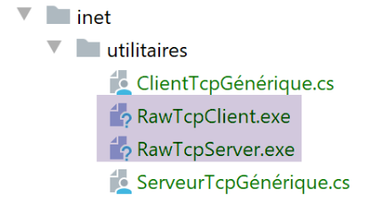
In the code associated with this document, there are two TCP communication utilities:
- [RawTcpClient] allows you to connect to port P of a server S;
- [RawTcpServer] allows you to create a server that listens for clients on port P;
These are two C# programs whose source code is provided. You can therefore modify them.
The TCP server [RawTcpServer] is called using the syntax [RawTcpServer port] to create a TCP service on port [port] of the local machine (the computer you are working on):
- The server can serve multiple clients simultaneously;
- The server executes commands typed by the user on the keyboard. These are as follows:
- list: lists the clients currently connected to the server. These are displayed in the format [id=x-name=y]. The [id] field is used to identify clients;
- send x [text]: sends text to client #x (id=x). The square brackets [] are not sent. They are required in the command. They are used to visually delimit the text sent to the client;
- close x: closes the connection with client #x;
- quit: closes all connections and stops the service;
- Lines sent by the client to the server are displayed on the console;
- All exchanges are logged in a text file named [machine-port.txt], where
- [machine] is the name of the machine on which the code is running;
- [port] is the service port that responds to client requests;
The TCP client [RawTcpClient] is called using the syntax [RawTcpClient server port] to connect to port [port] on server [server]:
- Lines typed by the user on the keyboard are sent to the server;
- the lines sent by the server are displayed on the console;
- All communication is logged in a text file named [server-port.txt];
Let’s look at an example. Open two PyCharm terminal windows and navigate to the utilities folder in each one:

In one of the windows, launch the [RawTcpServer] server on port 100:
(venv) C:\Data\st-2020\dev\python\cours-2020\python3-flask-2020\inet\utilitaires>RawTcpServer.exe 100
server: Generic server started on port 0.0.0.0:100
server: Waiting for a client...
server: Available commands: [list, send id [text], close id, quit]
user:
- Line 1: We are in the utilities folder;
- line 1: We start the TCP server on port 100;
- lines 2–4: The server waits for a TCP client and displays a list of commands that the user can type at the keyboard;
- line 5, the server waits for a command entered by the user via the keyboard;
In the other command window, we launch the TCP client:
(venv) C:\Data\st-2020\dev\python\cours-2020\python3-flask-2020\inet\utilitaires>RawTcpClient.exe localhost 100
Client [DESKTOP-30FF5FB:51173] connected to server [localhost-100]
Type your commands (quit to exit):
- Line 1: We are in the utilities folder;
- line 1: we launch the TCP client; we tell it to connect to port 100 on the local machine (the one running the [RawTcpClient] code);
- line 2, the client has successfully connected to the server. We specify the client’s details: it is on the machine [DESKTOP-30FF5FB] (the local machine in this example) and uses port [51173] to communicate with the server:
- Line 3: The client is waiting for a command entered by the user via the keyboard;
Let’s return to the server window. Its content has changed:
(venv) C:\Data\st-2020\dev\python\cours-2020\python3-flask-2020\inet\utilitaires>RawTcpServer.exe 100
server: Generic server launched on port 0.0.0.0:100
server: Waiting for a client...
server: Available commands: [list, send id [text], close id, quit]
user: server: Client 1-DESKTOP-30FF5FB-51173 connected...
server: Waiting for a client...
- Line 5: A client has been detected. The server assigned it ID 1. The server correctly identified the remote client (machine and port);
- Line 6: The server returns to waiting for a new client;
Let’s go back to the client window and send a command to the server:
(venv) C:\Data\st-2020\dev\python\cours-2020\python3-flask-2020\inet\utilitaires>RawTcpClient.exe localhost 100
Client [DESKTOP-30FF5FB:51173] connected to server [localhost-100]
Type your commands (quit to stop):
hello from client
- line 4, the command sent to the server;
Let’s go back to the server window. Its content has changed:
(venv) C:\Data\st-2020\dev\python\cours-2020\python3-flask-2020\inet\utilitaires>RawTcpServer.exe 100
server: Generic server launched on port 0.0.0.0:100
server: Waiting for a client...
server: Available commands: [list, send id [text], close id, quit]
user: server: Client 1-DESKTOP-30FF5FB-51173 connected...
server: Waiting for a client...
client 1: [hello from client]
- Line 7, in square brackets, the message received by the server;
Let's send a response to the client:
(venv) C:\Data\st-2020\dev\python\cours-2020\python3-flask-2020\inet\utilitaires>RawTcpServer.exe 100
server: Generic server launched on port 0.0.0.0:100
server: Waiting for a client...
server: Available commands: [list, send id [text], close id, quit]
user: server: Client 1-DESKTOP-30FF5FB-51173 connected...
server: Waiting for a client...
client 1: [hello from client]
send 1 [hello from server]
user:
- Line 8, the response sent to client 1. Only the text between the brackets is sent, not the brackets themselves;
Let's go back to the client window:
(venv) C:\Data\st-2020\dev\python\cours-2020\python3-flask-2020\inet\utilitaires>RawTcpClient.exe localhost 100
Client [DESKTOP-30FF5FB:51173] connected to server [localhost-100]
Type your commands (quit to stop):
hello from client
<-- [hello from server]
- Line 5, the response received by the client. The text received is the one in square brackets;
Let’s go back to the server window to see other commands:
(venv) C:\Data\st-2020\dev\python\cours-2020\python3-flask-2020\inet\utilitaires>RawTcpServer.exe 100
server: Generic server launched on port 0.0.0.0:100
server: Waiting for a client...
server: Available commands: [list, send id [text], close id, quit]
user: server: Client 1-DESKTOP-30FF5FB-51173 connected...
server: Waiting for a client...
client 1: [hello from client]
send 1 [hello from server]
user: list
server: id=1-name=DESKTOP-30FF5FB-51173
user: close 1
server: Client 1 connection closed...
user: quit
server: End of service
- Line 9, we request the list of clients;
- line 10, the response;
- line 11, we close the connection with client #1;
- line 12, the server's confirmation;
- line 13, we shut down the server;
- line 14, the server's confirmation;
Let’s go back to the client window:
(venv) C:\Data\st-2020\dev\python\cours-2020\python3-flask-2020\inet\utilitaires>RawTcpClient.exe localhost 100
Client [DESKTOP-30FF5FB:51173] connected to server [localhost-100]
Type your commands (quit to stop):
hello from client
<-- [hello from server]
Connection to the server lost...
- line 6, the client detected the end of service;
Two log files have been created, one for the server and one for the client:

- in [1], the server logs: the file name is the client name in the format [machine-port]. This allows for different log files for different clients;
- in [2], the client logs: the file name is the server name in the format [machine-port];
The server logs are as follows:
<-- [hello from client]
--> [hello from server]
The client logs are as follows:
--> [hello from client]
<-- [hello from server]
21.3. Obtaining the name or IP address of a machine on the Internet

Computers on the Internet are identified by an IP address (IPv4 or IPv6) and, more often than not, by a name. However, ultimately only the IP address is used by Internet communication protocols. Therefore, you need to know the IP address of a computer identified by its name.
The [ip-01.py] script is as follows:
# imports
import socket
# ------------------------------------------------
def get_ip_and_name(machine_name: str):
# machine_name: name of the machine whose IP address is desired
try:
# machine_name --> IP address
ip = socket.gethostbyname(machine_name)
print(f"ip[{machine_name}]={ip}")
except socket.error as error:
# display the error
print(f"ip[{machine_name}]={error}")
return
try:
# IP address --> machine_name
names = socket.gethostbyaddr(ip)
print(f"names[{ip}]={names}")
except socket.error as error:
# display the error
print(f"names[{ip}]={error}")
return
# ---------------------------------------- main
# Internet hosts
hosts = ["istia.univ-angers.fr", "www.univ-angers.fr", "sergetahe.com", "localhost", "xx"]
# IP addresses of HOST machines
for host in hosts:
print("-------------------------------------")
get_ip_and_name(host)
# end
print("Done...")
Comments
- line 2: the [socket] module provides the functions needed to manage Internet sockets. [socket] refers to an electrical outlet or network port;
- line 6: the [get_ip_and_name] function allows you to obtain the following from a machine's hostname:
- the machine's IP address;
- the machine's name derived from the previous IP address;
- line 10: the [socket.gethostbyname] function retrieves a machine’s IP address from one of its names (an internet machine may have a primary name and aliases);
- line 12: socket functions raise the [socket.error] exception as soon as an error occurs;
- line 19: the [socket.gethostbyaddr] function retrieves a machine’s name from its IP address. We’ll see that we can get a name different from the one passed in line 6;
- line 30: a list of machine names. The last name is incorrect. The name [localhost] refers to the machine you are working on and which is running the script;
- lines 33–35: we display the IP addresses of these machines;
Results:
C:\Data\st-2020\dev\python\cours-2020\python3-flask-2020\venv\Scripts\python.exe C:/Data/st-2020/dev/python/cours-2020/python3-flask-2020/inet/ip/ip_01.py
-------------------------------------
ip[istia.univ-angers.fr]=193.49.144.41
names[193.49.144.41] = ('ametys-fo-2.univ-angers.fr', [], ['193.49.144.41'])
-------------------------------------
ip[www.univ-angers.fr]=193.49.144.41
names[193.49.144.41] = ('ametys-fo-2.univ-angers.fr', [], ['193.49.144.41'])
-------------------------------------
ip[sergetahe.com]=87.98.154.146
names[87.98.154.146] = ('cluster026.hosting.ovh.net', [], ['87.98.154.146'])
-------------------------------------
ip[localhost]=127.0.0.1
names[127.0.0.1]=('DESKTOP-30FF5FB', [], ['127.0.0.1'])
-------------------------------------
ip[xx]=[Errno 11001] getaddrinfo failed
Done...
Process finished with exit code 0
21.4. The HTTP (HyperText Transfer Protocol)
21.4.1. Example 1
When a browser displays a URL, it acts as the client of a web server, or in other words, an HTTP server. It takes the initiative and begins by sending a number of commands to the server. For this first example:
- the server will be the [RawTcpServer] utility;
- the client will be a browser;
First, we start the server on port 100:
(venv) C:\Data\st-2020\dev\python\cours-2020\python3-flask-2020\inet\utilitaires>RawTcpServer.exe 100
server: Generic server launched on port 0.0.0.0:100
server: Waiting for a client...
server: Available commands: [list, send id [text], close id, quit]
user:
Then, using a browser, we request the URL [http://localhost:100], meaning we specify that the HTTP server being queried is running on port 100 of the local machine:

Let’s return to the server window:
(venv) C:\Data\st-2020\dev\python\cours-2020\python3-flask-2020\inet\utilitaires>RawTcpServer.exe 100
server: Generic server launched on port 0.0.0.0:100
server: Waiting for a client...
server: Available commands: [list, send id [text], close id, quit]
user: server: Client 1-DESKTOP-30FF5FB-51438 connected...
server: Waiting for a client...
server: Client 2-DESKTOP-30FF5FB-51439 connected...
server: Waiting for a client...
client 1: [GET / HTTP/1.1]
client 1: [Host: localhost:100]
client 1: [Connection: keep-alive]
client 1: [DNT: 1]
Client 1: [Upgrade-Insecure-Requests: 1]
Client 1: [User-Agent: Mozilla/5.0 (Windows NT 10.0; Win64; x64) AppleWebKit/537.36 (KHTML, like Gecko) Chrome/83.0.4103.116 Safari/537.36]
client 1: [Accept: text/html,application/xhtml+xml,application/xml;q=0.9,image/webp,image/apng,*/*;q=0.8,application/signed-exchange;v=b3;q=0.9]
Client 1: [Sec-Fetch-Site: none]
client 1: [Sec-Fetch-Mode: navigate]
client 1: [Sec-Fetch-User: ?1]
client 1: [Sec-Fetch-Dest: document]
client 1: [Accept-Encoding: gzip, deflate, br]
Client 1: [Accept-Language: fr-FR,fr;q=0.9,en-US;q=0.8,en;q=0.7]
Client 1: []
server: Client 3-DESKTOP-30FF5FB-51441 connected...
server: Waiting for a client...
- line 5, the client that connected;
- lines 9–22: the series of text lines it sent:
- line 9: this line has the format [GET URL HTTP/1.1]. It requests the URL / and instructs the server to use the HTTP 1.1 protocol;
- line 10: this line has the format [Host: server:port]. The case of the [Host] command does not matter. Note that the client is querying a local server operating on port 100;
- line 14: the [User-Agent] command identifies the client;
- line 15: the [Accept] command specifies which document types are accepted by the client;
- Line 21: The [Accept-Language] directive specifies the language in which the requested documents should be provided if they are available in multiple languages;
- Line 11: The [Connection] directive specifies the desired connection mode: [keep-alive] indicates that the connection should be maintained until the exchange is complete;
- line 22: the client ends its commands with a blank line;
We terminate the connection by shutting down the server:
client 1: []
server: Client 3-DESKTOP-30FF5FB-51441 connected...
server: Waiting for a client...
quit
server: service ended
21.4.2. Example 2
Now that we know the commands sent by a browser to request a URL, we will request this URL using our TCP client [RawTcpClient]. The Apache server in Laragon (section |Installing Laragon|) will be our web server.
Let’s launch Laragon and then the Apache web server:


Now, using a browser, let’s request the URL [http://localhost:80]. Here, we specify only the server [localhost:80] and no document URL. In this case, the URL / is requested, i.e., the root of the web server:

- in [1], the requested URL. We initially typed [http://localhost:80] and the browser (Firefox here) simply converted it to [localhost] because the [http] protocol is implied when no protocol is specified, and port [80] is implied when the port is not specified;
- in [2], the root page / of the queried web server;
Now, let’s view the text received by the browser:

- right-click on the received page and select option [2]. You will get the following source code:
<!DOCTYPE html>
<html>
<head>
<title>Laragon</title>
<link href="https://fonts.googleapis.com/css?family=Karla:400" rel="stylesheet" type="text/css">
<style>
html, body {
height: 100%;
}
body {
margin: 0;
padding: 0;
width: 100%;
display: table;
font-weight: 100;
font-family: 'Karla';
}
.container {
text-align: center;
display: table-cell;
vertical-align: middle;
}
.content {
text-align: center;
display: inline-block;
}
.title {
font-size: 96px;
}
.opt {
margin-top: 30px;
}
.opt a {
text-decoration: none;
font-size: 150%;
}
a:hover {
color: red;
}
</style>
</head>
<body>
<div class="container">
<div class="content">
<div class="title" title="Laragon">Laragon</div>
<div class="info">
<br />
Apache/2.4.35 (Win64) OpenSSL/1.1.1b PHP/7.2.19<br/>
PHP version: 7.2.19 <span><a title="phpinfo()" href="/?q=info">info</a></span><br />
Document Root: C:/MyPrograms/laragon/www<br />
</div>
<div class="opt">
<div><a title="Getting Started" href="https://laragon.org/docs">Getting Started</a></div>
</div>
</div>
</div>
</body>
</html>
Now let’s request the URL [http://localhost:80] using our TCP client:
(venv) C:\Data\st-2020\dev\python\cours-2020\python3-flask-2020\inet\utilitaires>RawTcpClient.exe localhost 80
Client [DESKTOP-30FF5FB:51541] connected to server [localhost-80]
Type your commands (quit to exit):
- Line 1: We connect to port 80 on the localhost server. This is where the Laragon web server runs;
Now we type the commands we discovered in the previous paragraph:
(venv) C:\Data\st-2020\dev\python\cours-2020\python3-flask-2020\inet\utilitaires>RawTcpClient.exe localhost 80
Client [DESKTOP-30FF5FB:51544] connected to server [localhost-80]
Enter your commands (quit to stop):
GET / HTTP/1.1
Host: localhost:80
<-- [HTTP/1.1 200 OK]
<-- [Date: Sun, 05 Jul 2020 12:42:14 GMT]
<-- [Server: Apache/2.4.35 (Win64) OpenSSL/1.1.1b PHP/7.2.19]
<-- [X-Powered-By: PHP/7.2.19]
<-- [Content-Length: 1776]
<-- [Content-Type: text/html; charset=UTF-8]
<-- []
<-- [<!DOCTYPE html>]
<-- [<html>]
<-- [ <head>]
<-- [ <title>Laragon</title>]
<-- []
<-- [ <link href="https://fonts.googleapis.com/css?family=Karla:400" rel="stylesheet" type="text/css">]
<-- []
<-- [ <style>]
<-- [ html, body {]
<-- [ height: 100%;]
<-- [ }]
<-- []
<-- [ body {]
<-- [ margin: 0;]
<-- [ padding: 0;]
<-- [ width: 100%;]
<-- [ display: table;]
<-- [ font-weight: 100;]
<-- [ font-family: 'Karla';]
<-- [ }]
<-- []
<-- [ .container {]
<-- [ text-align: center;]
<-- [ display: table-cell;]
<-- [ vertical-align: middle;]
<-- [ }]
<-- []
<-- [ .content {]
<-- [ text-align: center;]
<-- [ display: inline-block;]
<-- [ }]
<-- []
<-- [ .title {]
<-- [ font-size: 96px;]
<-- [ }]
<-- []
<-- [ .opt {]
<-- [ margin-top: 30px;]
<-- [ }]
<-- []
<-- [ .opt a {]
<-- [ text-decoration: none;]
<-- [ font-size: 150%;]
<-- [ }]
<-- [ ]
<-- [ a:hover {]
<-- [ color: red;]
<-- [ }]
<-- [ </style>]
<-- [ </head>]
<-- [ <body>]
<-- [ <div class="container">]
<-- [ <div class="content">]
<-- [ <div class="title" title="Laragon">Laragon</div>]
<-- [ ]
<-- [ <div class="info"><br />]
<-- [ Apache/2.4.35 (Win64) OpenSSL/1.1.1b PHP/7.2.19<br />]
<-- [ PHP version: 7.2.19 <span><a title="phpinfo()" href="/?q=info">info</a></span><br />]
<-- [ Document Root: C:/MyPrograms/laragon/www<br />]
<-- []
<-- [ </div>]
<-- [ <div class="opt">]
<-- [ <div><a title="Getting Started" href="https://laragon.org/docs">Getting Started</a></div>]
<-- [ </div>]
<-- [ </div>]
<-- []
<-- [ </div>]
<-- [ </body>]
<-- [</html>]
Connection to the server lost...
- Line 4, the [GET] command. We request the root directory / of the web server;
- line 5, the [Host] command;
- these are the only two essential commands. For the other commands, the web server will use default values;
- line 6, the empty line that must end the client's commands;
- below line 6 comes the web server’s response;
- lines 7–12: the HTTP headers of the server’s response;
- line 13: the blank line that signals the end of the HTTP headers;
- Lines 14–82: the HTML document requested on line 4;
We load the log file [localhost-80.txt]:

--> [GET / HTTP/1.1]
--> [Host: localhost:80]
--> []
<-- [HTTP/1.1 200 OK]
<-- [Date: Sun, 05 Jul 2020 12:42:14 GMT]
<-- [Server: Apache/2.4.35 (Win64) OpenSSL/1.1.1b PHP/7.2.19]
<-- [X-Powered-By: PHP/7.2.19]
<-- [Content-Length: 1776]
<-- [Content-Type: text/html; charset=UTF-8]
<-- []
<-- [<!DOCTYPE html>]
<-- [<html>]
<-- [ <head>]
<-- [ <title>Laragon</title>]
<-- []
<-- [ <link href="https://fonts.googleapis.com/css?family=Karla:400" rel="stylesheet" type="text/css">]
<-- []
<-- [ <style>]
<-- [ html, body {]
<-- [ height: 100%;]
<-- [ }]
<-- []
<-- [ body {]
<-- [ margin: 0;]
<-- [ padding: 0;]
<-- [ width: 100%;]
<-- [ display: table;]
<-- [ font-weight: 100;]
<-- [ font-family: 'Karla';]
<-- [ }]
<-- []
<-- [ .container {]
<-- [ text-align: center;]
<-- [ display: table-cell;]
<-- [ vertical-align: middle;]
<-- [ }]
<-- []
<-- [ .content {]
<-- [ text-align: center;]
<-- [ display: inline-block;]
<-- [ }]
<-- []
<-- [ .title {]
<-- [ font-size: 96px;]
<-- [ }]
<-- []
<-- [ .opt {]
<-- [ margin-top: 30px;]
<-- [ }]
<-- []
<-- [ .opt a {]
<-- [ text-decoration: none;]
<-- [ font-size: 150%;]
<-- [ }]
<-- [ ]
<-- [ a:hover {]
<-- [ color: red;]
<-- [ }]
<-- [ </style>]
<-- [ </head>]
<-- [ <body>]
<-- [ <div class="container">]
<-- [ <div class="content">]
<-- [ <div class="title" title="Laragon">Laragon</div>]
<-- [ ]
<-- [ <div class="info"><br />]
<-- [ Apache/2.4.35 (Win64) OpenSSL/1.1.1b PHP/7.2.19<br />]
<-- [ PHP version: 7.2.19 <span><a title="phpinfo()" href="/?q=info">info</a></span><br />]
<-- [ Document Root: C:/MyPrograms/laragon/www<br />]
<-- []
<-- [ </div>]
<-- [ <div class="opt">]
<-- [ <div><a title="Getting Started" href="https://laragon.org/docs">Getting Started</a></div>]
<-- [ </div>]
<-- [ </div>]
<-- []
<-- [ </div>]
<-- [ </body>]
<-- [</html>]
- Lines 11–79: the received HTML document. In the previous example, Firefox received the same one;
We now have the basics to program a TCP client that would request a URL.
21.4.3. Example 3

The script [http/01/main.py] is an HTTP client configured by the file [config.py]. Its contents are as follows:
def configure():
# URLs to query
urls = [
# site: name of the site to connect to
# port: web service port
# GET: requested URL
# headers: HTTP headers to send in the request
# endOfLine: line break character in the sent HTTP headers
# encoding: encoding of the server response
# timeout: maximum wait time for a server response
{
"site": "localhost",
"port": 80,
"GET": "/",
"headers": {
"Host": "localhost:80",
"User-Agent": "Python client",
"Accept": "text/HTML",
"Accept-Language": "fr"
},
"endOfLine": "\r\n",
"encoding": "utf-8",
"timeout": 0.5
},
{
"site": "sergetahe.com",
"port": 80,
"GET": "/",
"headers": {
"Host": "sergetahe.com:80",
"User-Agent": "Python client",
"Accept": "text/HTML",
"Accept-Language": "fr"
},
"endOfLine": "\r\n",
"encoding": "utf-8",
"timeout": 5
},
{
"site": "tahe.developpez.com",
"port": 443,
"GET": "/",
"headers": {
"Host": "tahe.developpez.com:443",
"User-Agent": "Python client",
"Accept": "text/HTML",
"Accept-Language": "fr"
},
"endOfLine": "\r\n",
"encoding": "utf-8",
"timeout": 2
},
{
"site": "www.sergetahe.com",
"port": 80,
"GET": "/programming-tutorials/",
"headers": {
"Host": "sergetahe.com:80",
"User-Agent": "Python client",
"Accept": "text/HTML",
"Accept-Language": "fr"
},
"endOfLine": "\r\n",
"encoding": "utf-8",
"timeout": 5
}
]
# return the configuration
return {
"urls": urls
}
- The file's content is a list of URLs, with each item in the list being a dictionary. This dictionary specifies how to connect to the site designated by the [site] key;
- lines 4–10: the meaning of the keys in each dictionary;
The script [http/01/main.py] is as follows:
# imports
import codecs
import socket
# -----------------------------------------------------------------------
def get_url(url: dict, track: bool = True):
# reads the URL url["GET"] from the site url[site] and saves it to the file url[site].html
# the client/server communication follows the HTTP protocol specified in the [url] dictionary
# exceptions are allowed to propagate
sock = None
html = None
try:
# Connect to [site] on port 80 with a timeout
site = url['site']
sock = socket.create_connection((site, int(url['port'])), float(url['timeout']))
# connection represents a bidirectional communication channel
# between the client (this program) and the contacted web server
# this channel is used for exchanging commands and information
# the communication protocol is HTTP
# creating the site.html file - replacing the problematic characters with a filename
site2 = site.replace("/", "_")
site2 = site2.replace(".", "_")
html_filename = f'{site2}.html'
html = codecs.open(f"output/{html_filename}", "w", "utf-8")
# The client will initiate the HTTP connection with the server
if followed:
print(f"Client: starting communication with the server [{site}]")
# Depending on the server, client lines must end with \n or \r\n
end_of_line = url["endOfLine"]
# The client sends the GET request to retrieve the URL config["GET"]
# GET syntax: URL HTTP/1.1
command = f"GET {url['GET']} HTTP/1.1{end_of_line}"
# Followed by?
if follow:
print(f"--> {command}", end='')
# send the command to the server
sock.send(bytearray(command, 'utf-8'))
# send HTTP headers
for verb, value in url['headers'].items():
# build the command to send
command = f"{verb}: {value}{end_of_line}"
# follow-up?
if follow:
print(f"--> {command}", end='')
# Send the command to the server
sock.send(bytearray(command, 'utf-8'))
# We send the HTTP header [Connection: close] to instruct the web server
# to close the connection once it has sent the requested document
sock.send(bytearray(f"Connection: close{end_of_line}", 'utf-8'))
# HTTP headers must end with an empty line
sock.send(bytearray(end_of_line, 'utf-8'))
#
# The server will now respond on the sock channel. It will send all
# its data and then close the socket. The client therefore reads everything coming from the socket
# until the channel is closed
#
# First, we read the HTTP headers sent by the server
# they also end with a blank line
if followed:
print(f"Response from the server [{site}]")
# Read the socket as if it were a text file
encoding = f"{url['encoding']}" if url['encoding'] else None
if encoding:
file = sock.makefile(encoding=encoding)
else:
file = sock.makefile()
# process this file line by line
finished = False
while not finished:
# read current line
line = file.readline().strip()
# Is the line non-empty?
if line:
if follow:
# display the HTTP header
print(f"<-- {line}")
else:
# this was the empty line - the HTTP headers are finished
finished = True
# read the HTML document that follows the empty line
# read current line
line = file.readline()
while line:
# write to the log file
html.write(str(line))
# next line
line = file.readline()
# the loop ends when the server closes the connection
finally:
# the client closes the connection
if sock:
sock.close()
# Close the HTML file
if html:
html.close()
# -------------------main
# configure the application
import config
config = config.configure()
# Get the URLs from the configuration file
for url in config['urls']:
print("-------------------------")
print(url['site'])
print("-------------------------")
try:
# Read the URL of the [site] site
get_url(url)
except BaseException as error:
print(f"The following error occurred: {error}")
finally:
pass
# end
print("Done...")
Code comments:
- lines 108-109: the [config] dictionary from the [config.py] module is retrieved;
- lines 111-122: this dictionary is used;
- lines 118, 7: the [get_url(url)] function requests a document from the website url[site] and stores it in the text file url[site].HTML. By default, client/server exchanges are logged to the console (tracking=True);
- Everything is done within a [try / finally] block (lines 14–96). There is no [except] clause. Exceptions are propagated to the calling code, which catches and displays them (lines 119–120);
- Lines 16–17: Opening a connection to the web server. The [socket.create_connection] function takes three parameters:
- [param1]: is the name of the Internet machine you want to reach;
- [param2]: is the port number of the service you want to connect to;
- [param3]: [socket.create_connection] returns a socket, and [param3], if present, specifies the timeout for the created socket. The timeout is the maximum waiting period for the socket while it waits for a response from the remote machine;
- lines 27-28: creation of the [site.html] file in which the received HTML document will be stored;
- lines 34-43: the client’s first command must be the [GET URL HTTP/1.1] command;
- line 43: the [sock.send] function allows the client to send data to the server. Here, the text string sent has the following meaning: "I want (GET) the page [URL] from the website I am connected to. I am using HTTP version 1.1";
- Line 43: The statement [sock.send(bytearray(command, 'utf-8'))] sends a byte array. This array is obtained by converting the string [command] into a sequence of bytes encoded in UTF-8;
- lines 44–52: the other HTTP protocol lines [Host, User-Agent, Accept, Accept-Language…] are sent. Their order does not matter;
- lines 53–55: the HTTP header [Connection: close] is sent to instruct the server to close the connection once it has sent the requested document. By default, it does not do this. Therefore, it must be explicitly requested. The benefit is that this closure will be detected on the client side, and this is how the client will know it has received the entire requested document;
- lines 56–57: an empty line is sent to the server to indicate that the client has finished sending its HTTP headers and is now waiting for the requested document;
- lines 68–86: The server will first send a series of HTTP headers that provide various details about the requested document. These headers end with an empty line;
- lines 69–73: To read the server’s response line by line, we use the [sock.makefile(encoding=encoding)] method. The optional [encoding] parameter specifies the expected text encoding. After this operation, the stream of lines sent by the server can be read like a standard text file;
- line 78: we read a line sent by the server using the [readline] method. We strip it of its leading and trailing whitespace (spaces, newline characters);
- lines 81–83: if the line is not empty and tracking has been requested, the received line is displayed on the console;
- lines 84–86: if the empty line marking the end of the HTTP headers sent by the server has been retrieved, the loop on line 76 is terminated;
- lines 90-95: the text lines of the server’s response can be read line by line using a while loop and saved to the [html] text file. When the web server has sent the entire page requested, it closes its connection with the client. On the client side, this will be detected as an end-of-file, and we will exit the loop in lines 90–95;
- Lines 96–102: Whether an error occurs or not, all resources used by the code are released;
Results:
The console displays the following logs:
C:\Data\st-2020\dev\python\cours-2020\python3-flask-2020\venv\Scripts\python.exe C:/Data/st-2020/dev/python/cours-2020/python3-flask-2020/inet/http/01/main.py
-------------------------
localhost
-------------------------
Client: Starting communication with the server [localhost]
--> GET / HTTP/1.1
--> Host: localhost:80
--> User-Agent: Python client
--> Accept: text/HTML
--> Accept-Language: fr
Response from the server [localhost]
<-- HTTP/1.1 200 OK
<-- Date: Sun, 05 Jul 2020 16:27:46 GMT
<-- Server: Apache/2.4.35 (Win64) OpenSSL/1.1.1b PHP/7.2.19
<-- X-Powered-By: PHP/7.2.19
<-- Content-Length: 1776
<-- Connection: close
<-- Content-Type: text/html; charset=UTF-8
-------------------------
sergetahe.com
-------------------------
Client: Start of communication with the server [sergetahe.com]
--> GET / HTTP/1.1
--> Host: sergetahe.com:80
--> User-Agent: Python client
--> Accept: text/HTML
--> Accept-Language: fr
Server response [sergetahe.com]
<-- HTTP/1.1 302 Found
<-- Date: Sun, 05 Jul 2020 16:27:45 GMT
<-- Content-Type: text/html; charset=UTF-8
<-- Transfer-Encoding: chunked
<-- Connection: close
<-- Server: Apache
<-- X-Powered-By: PHP/7.3
<-- Location: http://sergetahe.com:80/cours-tutoriels-de-programmation
<-- Set-Cookie: SERVERID68971=2620178|XwH/h|XwH/h; path=/
<-- X-IPLB-Instance: 17106
-------------------------
tahe.developpez.com
-------------------------
Client: Start of communication with the server [tahe.developpez.com]
--> GET / HTTP/1.1
--> Host: tahe.developpez.com:443
--> User-Agent: Python client
--> Accept: text/HTML
--> Accept-Language: fr
Response from the server [tahe.developpez.com]
<-- HTTP/1.1 400 Bad Request
<-- Date: Sun, 05 Jul 2020 16:27:45 GMT
<-- Server: Apache/2.4.38 (Debian)
<-- Content-Length: 453
<-- Connection: close
<-- Content-Type: text/html; charset=iso-8859-1
-------------------------
www.sergetahe.com
-------------------------
Client: Start of communication with the server [www.sergetahe.com]
--> GET /programming-tutorials/ HTTP/1.1
--> Host: sergetahe.com:80
--> User-Agent: Python client
--> Accept: text/HTML
--> Accept-Language: fr
Server response [www.sergetahe.com]
<-- HTTP/1.1 301 Moved Permanently
<-- Date: Sun, 05 Jul 2020 16:27:45 GMT
<-- Content-Type: text/html; charset=iso-8859-1
<-- Content-Length: 263
<-- Connection: close
<-- Server: Apache
<-- Location: https://sergetahe.com/cours-tutoriels-de-programmation/
<-- Set-Cookie: SERVERID68971=2620178|XwH/h|XwH/h; path=/
<-- X-IPLB-Instance: 17095
Done...
Process finished with exit code 0
Comments
- line 12: the URL [http://localhost/] was found (code 200);
- line 29: the URL [http://sergetahe.com/] was not found (code 302). Code 302 means that the requested page has changed its URL. The new URL is indicated by the HTTP [Location] header on line 36;
- line 49: the request sent to the server [http://tahe.developpez.com] is invalid (status code 400);
- line 65: the URL [http://www.sergetahe.com/] was not found (code 301). Code 301 means that the requested page has permanently changed its URL. The new URL is indicated by the HTTP header [Location] on line 71;
In general, 3xx, 4xx, and 5xx codes from an HTTP server are error codes.
The execution produced the following files:

The received file [output/localhost.HTML] is as follows:
<!DOCTYPE html>
<html>
<head>
<title>Laragon</title>
<link href="https://fonts.googleapis.com/css?family=Karla:400" rel="stylesheet" type="text/css">
<style>
html, body {
height: 100%;
}
body {
margin: 0;
padding: 0;
width: 100%;
display: table;
font-weight: 100;
font-family: 'Karla';
}
.container {
text-align: center;
display: table-cell;
vertical-align: middle;
}
.content {
text-align: center;
display: inline-block;
}
.title {
font-size: 96px;
}
.opt {
margin-top: 30px;
}
.opt a {
text-decoration: none;
font-size: 150%;
}
a:hover {
color: red;
}
</style>
</head>
<body>
<div class="container">
<div class="content">
<div class="title" title="Laragon">Laragon</div>
<div class="info"><br />
Apache/2.4.35 (Win64) OpenSSL/1.1.1b PHP/7.2.19<br/>
PHP version: 7.2.19 <span><a title="phpinfo()" href="/?q=info">info</a></span><br />
Document Root: C:/MyPrograms/laragon/www<br />
</div>
<div class="opt">
<div><a title="Getting Started" href="https://laragon.org/docs">Getting Started</a></div>
</div>
</div>
</div>
</body>
</html>
We did indeed get the same document as with the Firefox browser.
The received document [output/sergetahe_com.html] is as follows:
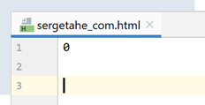
Most HTTP servers send their responses to requests in chunks. Each chunk sent is preceded by a line indicating the number of bytes in the following chunk. This allows the client to read that exact number of bytes to receive the chunk. Here, the 0 indicates that the following chunk has zero bytes. Recall that the server had indicated that the document [http://sergetahe.com/] had changed its URL. Therefore, it did not send a document.
The document [output/tahe_developpez_com.html] is as follows:
<!DOCTYPE HTML PUBLIC "-//IETF//DTD HTML 2.0//EN">
<html><head>
<title>400 Bad Request</title>
</head><body>
<h1>Bad Request</h1>
<p>Your browser sent a request that this server could not understand.<br/>
Reason: You are using plain HTTP to access an SSL-enabled server port.<br/>
Please use the HTTPS protocol to access this URL instead.<br/>
</p>
<hr>
<address>Apache/2.4.38 (Debian) Server at 2eurocents.developpez.com Port 80</address>
</body></html>
- Lines 1–12: The server sent an HTML document despite the fact that the request was incorrect (line 49 of the results). The HTML document allows the server to specify the cause of the error. This is indicated on lines 6 and 7:
- line 7: our client used the HTTP protocol;
- line 8: the server uses the HTTPS protocol (S=secure) and does not accept the HTTP protocol;
The document [output/www_sergetahe_com.html] is as follows:
<!DOCTYPE HTML PUBLIC "-//IETF//DTD HTML 2.0//EN">
<html><head>
<title>301 Moved Permanently</title>
</head><body>
<h1>Moved Permanently</h1>
<p>The document has moved <a href="https://sergetahe.com/cours-tutoriels-de-programmation/">here</a>.</p>
</body></html>
Here too, an error occurred (line 3). However, the server takes care to send an HTML document detailing the error (lines 1–7).
21.4.4. Example 4
The previous examples showed us that our HTTP client was insufficient. We will now introduce a tool called [curl] that allows us to retrieve web documents while handling the challenges mentioned: HTTPS protocol, documents sent in chunks, redirects… The [curl] tool was installed with Laragon:
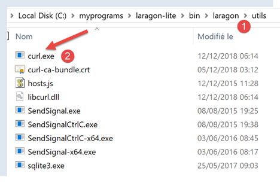
Let’s open a PyCharm terminal [1]:

- in [1], access to PyCharm terminals;
- in [2-3], the terminals already active;
- in [4], the directory you are currently in. It doesn't matter which one you use;
In the terminal, type the following command:
(venv) C:\Data\st-2020\dev\python\cours-2020\python3-flask-2020\inet\utilitaires>curl --help
Usage: curl [options...] <url>
--abstract-unix-socket <path> Connect via abstract Unix domain socket
--anyauth Choose any authentication method
-a, --append Append to target file when uploading
--basic Use HTTP Basic Authentication
--cacert <CA certificate> CA certificate to verify the peer against
…
The fact that the [curl –help] command produced results shows that the [curl] command is in the terminal’s PATH. In Windows, the PATH is the set of folders searched when the user types an executable command, in this case [curl]. The value of the PATH can be determined as follows:
(venv) C:\Data\st-2020\dev\python\cours-2020\python3-flask-2020\inet\utilitaires>echo %PATH%
C:\Data\st-2020\dev\python\cours-2020\python3-flask-2020\venv\Scripts;C:\Program Files (x86)\Common Files\Oracle\Java\javapath;C:\Program Files\Python38\Scripts\;C:\Program Files\Python38\;C:\windows\system32;C:\windows;C:\windows\System32\Wbem;C:\windows\System32\WindowsPowerShell\v1.0\;C:\windows\System32\OpenSSH\;C:\Program Files\Git\cmd;C:\Users\serge\AppData\Local\Microsoft\WindowsApps;;C:\Program Files\JetBrains\PyCharm Community Edition 2020.1.2\bin;
Line 2: the PATH folders separated by semicolons. No folder related to Laragon appears in this list. Upon further investigation, we find that there is a [curl] in the [c:\windows\system32] folder. This is the one that responded earlier.
If you want to use the [curl] tool included with Laragon, you can proceed as follows:


- in [2], the Laragon terminal;
- in [3], this button allows you to create new terminals, each opening in a tab in the window above;
- in [4], we set the PATH for the Laragon terminal;
- you get something very different from what was obtained in a PyCharm terminal. This PATH contains many folders created during Laragon’s installation. The folder containing the [curl] tool is one of them:

Afterward, use the terminal of your choice. Just keep in mind that when you want to use a tool provided by Laragon, the Laragon terminal is the preferred option.
The [curl --help] command displays all of [curl]’s configuration options. There are dozens of them. We’ll use very few of them. To request a URL, simply type the command [curl URL]. This command will display the requested document on the console. If you also want to see the HTTP exchanges between the client and the server, type [curl --verbose URL]. Finally, to save the requested HTML document to a file, type [curl --verbose --output filename URL].
To avoid cluttering our machine’s file system, let’s move to a different location (I’m using a Laragon terminal here):
λ cd \Temp\
C:\Temp
λ mkdir curl
C:\Temp
λ cd curl\
C:\Temp\curl
λ dir
The volume on drive C is named Local Disk
The volume's serial number is B84C-D958
Directory of C:\Temp\curl
07/05/2020 7:31 PM <DIR> .
07/05/2020 7:31 PM <DIR> ..
0 file(s) 0 bytes
2 Dir(s) 892,388,098,048 free bytes
- line 3, we navigate to the [c:\temp] folder. If this folder does not exist, you can create it or choose another one;
- line 6, create a folder named [curl];
- line 9, we navigate to it;
- line 12, list its contents. It is empty (line 20);
Make sure the Laragon Apache server is running, and use [curl] to request the URL [http://localhost/] with the command [curl –verbose –output localhost.html http://localhost/]. You will get the following results:
λ curl --verbose --output localhost.html http://localhost/
% Total % Received % Transferred Average Speed Time Time Time Current
Download Upload Total Spent Left Speed
0 0 0 0 0 0 0 0 --:--:-- --:--:-- --:--:-- 0* Trying ::1...
* TCP_NODELAY set
* Trying 127.0.0.1...
* TCP_NODELAY set
0 0 0 0 0 0 0 0 --:--:-- 0:00:01 --:--:-- 0* Connected to localhost (::1) port 80 (#0)
0 0 0 0 0 0 0 0 --:--:-- 0:00:01 --:--:-- 0> GET / HTTP/1.1
> Host: localhost
> User-Agent: curl/7.63.0
> Accept: */*
>
< HTTP/1.1 200 OK
< Date: Sun, 05 Jul 2020 17:35:43 GMT
< Server: Apache/2.4.35 (Win64) OpenSSL/1.1.1b PHP/7.2.19
< X-Powered-By: PHP/7.2.19
< Content-Length: 1776
< Content-Type: text/html; charset=UTF-8
<
{ [1776 bytes of data]
100 1776 100 1776 0 0 1062 0 0:00:01 0:00:01 --:--:-- 1062
* Connection #0 to host localhost left intact
- lines 10–13: lines sent by [curl] to the [localhost] server. The HTTP protocol is recognized;
- lines 14–20: lines sent in response by the server;
- line 14: indicates that the requested document was successfully received;
The file [localhost.html] contains the requested document. You can verify this by opening the file in a text editor.
Now let’s request the URL [https://tahe.developpez.com:443/]. To access this URL, the HTTP client must support HTTPS. This is the case with the [curl] client.
The console output is as follows:
C:\Temp\curl
λ curl --verbose --output tahe.developpez.com.html https://tahe.developpez.com:443/
% Total % Received % Xferd Average Speed Time Time Time Current
Dload Upload Total Spent Left Speed
0 0 0 0 0 0 0 0 --:--:-- --:--:-- --:--:-- 0* Trying 87.98.130.52...
* TCP_NODELAY set
0 0 0 0 0 0 0 0 --:--:-- --:--:-- --:--:-- 0* Connected to tahe.developpez.com (87.98.130.52) port 443 (#0)
* ALPN, offering h2
* ALPN, offering http/1.1
* successfully set certificate verify locations:
* CAfile: C:\MyPrograms\laragon\bin\laragon\utils\curl-ca-bundle.crt
CApath: none
} [5 bytes data]
* TLSv1.3 (OUT), TLS handshake, Client hello (1):
} [512 bytes data]
* TLSv1.3 (IN), TLS handshake, Server hello (2):
{ [122 bytes data]
* TLSv1.3 (IN), TLS handshake, Encrypted Extensions (8):
{ [25 bytes of data]
* TLSv1.3 (IN), TLS handshake, Certificate (11):
{ [2563 bytes of data]
* TLSv1.3 (IN), TLS handshake, CERT verify (15):
{ [264 bytes data]
* TLSv1.3 (IN), TLS handshake, Finished (20):
{ [52 bytes data]
* TLSv1.3 (OUT), TLS change cipher, Change cipher spec (1):
} [1 bytes data]
* TLSv1.3 (OUT), TLS handshake, Finished (20):
} [52 bytes data]
* SSL connection using TLSv1.3 / TLS_AES_256_GCM_SHA384
* ALPN, server agreed to use HTTP/1.1
* Server certificate:
* subject: CN=*.developpez.com
* start date: Jul 1 15:38:30 2020 GMT
* expiration date: Sep 29 15:38:30 2020 GMT
* subjectAltName: host "tahe.developpez.com" matched cert's "*.developpez.com"
* issuer: C=US; O=Let's Encrypt; CN=Let's Encrypt Authority X3
* SSL certificate verified successfully.
} [5 bytes data]
> GET / HTTP/1.1
> Host: tahe.developpez.com
> User-Agent: curl/7.63.0
> Accept: */*
>
{ [5 bytes of data]
* TLSv1.3 (IN), TLS handshake, New Session Ticket (4):
{ [281 bytes of data]
* TLSv1.3 (IN), TLS handshake, New Session Ticket (4):
{ [297 bytes data]
* old SSL session ID is stale, removing
{ [5 bytes data]
< HTTP/1.1 200 OK
< Date: Sun, 05 Jul 2020 17:39:53 GMT
< Server: Apache/2.4.38 (Debian)
< X-Powered-By: PHP/5.3.29
< Vary: Accept-Encoding
< Transfer-Encoding: chunked
< Content-Type: text/html
<
{ [6 bytes data]
100 99k 0 99k 0 0 79343 0 --:--:-- 0:00:01 --:--:-- 79343
* Connection #0 to host tahe.developpez.com left intact
- lines 10-39: client/server exchanges to secure the connection: this will be encrypted;
- lines 41-44: the HTTP headers sent by the client [curl] to the server;
- line 52: the requested document was found;
- line 57: the document is sent in chunks;
[curl] correctly handles both the secure HTTPS protocol and the fact that the document is sent in chunks. The sent document can be found here in the file [tahe.developpez.com.html].
Now let’s request the URL [http://sergetahe.com/cours-tutoriels-de-programmation]. We saw that for this URL, there was a redirect to the URL [http://sergetahe.com/cours-tutoriels-de-programmation/] (with a / at the end).
The console output is as follows:
C:\Temp\curl
λ curl --verbose --output sergetahe.com.html --location http://sergetahe.com/cours-tutoriels-de-programmation
% Total % Received % Xferd Average Speed Time Time Time Current
Dload Upload Total Spent Left Speed
0 0 0 0 0 0 0 0 --:--:-- --:--:-- --:--:-- 0* Trying 87.98.154.146...
* TCP_NODELAY set
* Connected to sergetahe.com (87.98.154.146) port 80 (#0)
> GET /programming-tutorials HTTP/1.1
> Host: sergetahe.com
> User-Agent: curl/7.63.0
> Accept: */*
>
< HTTP/1.1 301 Moved Permanently
< Date: Sun, 05 Jul 2020 17:44:17 GMT
< Content-Type: text/html; charset=iso-8859-1
< Content-Length: 262
< Server: Apache
< Location: http://sergetahe.com/cours-tutoriels-de-programmation/
< Set-Cookie: SERVERID68971=2620178|XwIRd|XwIRd; path=/
< X-IPLB-Instance: 17095
<
* Ignoring the response body
{ [262 bytes of data]
100 262 100 262 0 0 1858 0 --:--:-- --:--:-- --:--:-- 1858
* Connection #0 to host sergetahe.com remains open
* Send another request to this URL: 'http://sergetahe.com/cours-tutoriels-de-programmation/'
* Found bundle for host sergetahe.com: 0x14385f8 [can pipeline]
* Could pipeline, but not asked to!
* Re-using existing connection! (#0) with host sergetahe.com
* Connected to sergetahe.com (87.98.154.146) port 80 (#0)
> GET /programming-tutorials/ HTTP/1.1
> Host: sergetahe.com
> User-Agent: curl/7.63.0
> Accept: */*
>
< HTTP/1.1 301 Moved Permanently
< Date: Sun, 05 Jul 2020 17:44:17 GMT
< Content-Type: text/html; charset=iso-8859-1
< Content-Length: 263
< Server: Apache
< Location: https://sergetahe.com/cours-tutoriels-de-programmation/
< Set-Cookie: SERVERID68971=2620178|XwIRd|XwIRd; path=/
< X-IPLB-Instance: 17095
<
* Ignoring the response body
{ [263 bytes of data]
100 263 100 263 0 0 764 0 --:--:-- --:--:-- --:--:-- 764
* Connection #0 to host sergetahe.com remains active
* Sending another request to this URL: 'https://sergetahe.com/cours-tutoriels-de-programmation/'
* Trying 87.98.154.146...
* TCP_NODELAY set
* Connected to sergetahe.com (87.98.154.146) port 443 (#1)
* ALPN, offering h2
* ALPN, offering http/1.1
* Certificate verification locations successfully set:
* CAfile: C:\MyPrograms\laragon\bin\laragon\utils\curl-ca-bundle.crt
CApath: none
} [5 bytes data]
* TLSv1.3 (OUT), TLS handshake, Client hello (1):
} [512 bytes data]
* TLSv1.3 (IN), TLS handshake, Server hello (2):
{ [102 bytes data]
* TLSv1.2 (IN), TLS handshake, Certificate (11):
{ [2572 bytes of data]
* TLSv1.2 (IN), TLS handshake, Server key exchange (12):
{ [333 bytes of data]
* TLSv1.2 (IN), TLS handshake, Server finished (14):
{ [4 bytes data]
* TLSv1.2 (OUT), TLS handshake, Client key exchange (16):
} [70 bytes of data]
* TLSv1.2 (OUT), TLS change cipher, Change cipher spec (1):
} [1 byte of data]
* TLSv1.2 (OUT), TLS handshake, Finished (20):
} [16 bytes data]
0 0 0 0 0 0 0 0 --:--:-- --:--:-- --:--:-- 0* TLSv1.2 (IN), TLS handshake, Finished (20):
{ [16 bytes data]
* SSL connection using TLSv1.2 / ECDHE-RSA-AES128-GCM-SHA256
* ALPN, server agreed to use h2
* Server certificate:
* subject: CN=sergetahe.com
* start date: May 10, 2020, 01:41:15 GMT
* expiration date: Aug 8 01:41:15 2020 GMT
* subjectAltName: host "sergetahe.com" matched cert's "sergetahe.com"
* issuer: C=US; O=Let's Encrypt; CN=Let's Encrypt Authority X3
* SSL certificate verified successfully.
* Using HTTP2, server supports multi-use
* Connection state changed (HTTP/2 confirmed)
* Copying HTTP/2 data in stream buffer to connection buffer after upgrade: len=0
} [5 bytes of data]
* Using Stream ID: 1 (easy handle 0x2bee870)
} [5 bytes of data]
> GET /programming-tutorials/ HTTP/2
> Host: sergetahe.com
> User-Agent: curl/7.63.0
> Accept: */*
>
{ [5 bytes of data]
* Connection state changed (MAX_CONCURRENT_STREAMS == 128)!
} [5 bytes data]
0 0 0 0 0 0 0 0 --:--:-- 0:00:01 --:--:-- 0< HTTP/2 200
< date: Sun, 05 Jul 2020 17:44:19 GMT
< content-type: text/html; charset=UTF-8
< server: Apache
< x-powered-by: PHP/7.3
< link: <https://sergetahe.com/cours-tutoriels-de-programmation/wp-json/>; rel="https://api.w.org/"
< link: <https://sergetahe.com/cours-tutoriels-de-programmation/>; rel=shortlink
< vary: Accept-Encoding
< x-iplb-instance: 17080
< set-cookie: SERVERID68971=2620178|XwIRd|XwIRd; path=/
<
{ [5 bytes data]
100 49634 0 49634 0 0 26040 0 --:--:-- 0:00:01 --:--:-- 37830
* Connection #1 to host sergetahe.com left intact
- line 2: the [--location] option is used to indicate that we want to follow redirects sent by the server;
- line 13: the server indicates that the requested document has changed its URL;
- line 18: it indicates the new URL of the requested document;
- line 31: [curl] sends a new request to the new URL;
- line 36: the server responds again that the URL has changed;
- line 41: the new URL is exactly the same as the one that was redirected, with one minor difference: the protocol has changed. It has become HTTPS (line 41) whereas it was previously HTTP (line 31);
- Line 49: A new request is sent to the new URL. This request is encrypted. Consequently, a security negotiation process takes place (lines 53–91);
- Line 92: The new URL is requested, this time using the HTTP/2 protocol;
- Line 100: The document has been found;
The requested document will be found in the file [sergetahe.com.html].
C:\Temp\curl
λ dir
The volume in drive C is named Local Disk
The volume's serial number is B84C-D958
Directory of C:\Temp\curl
07/05/2020 7:44 PM <DIR> .
07/05/2020 7:44 PM <DIR> ..
07/05/2020 7:35 PM 1,776 localhost.html
07/05/2020 7:44 PM 49,634 sergetahe.com.html
07/05/2020 7:39 PM 101,639 tahe.developpez.com.html
3 file(s) 153,049 bytes
2 Reps 892,385,628,160 free bytes
21.4.5. Example 5
Python has a module called [pyccurl] that allows you to use the capabilities of the [curl] tool in a Python program. We install this module:

We will write a new script [http/02/main.py]:

The [http/02/config] file is as follows:
def configure():
# list of URLs to query
urls = [
# site: server to connect to
# timeout: maximum time to wait for a response from the server
# target: URL to request
# encoding: encoding of the server response
{
"site": "sergetahe.com",
"timeout": 2000,
"target": "http://sergetahe.com",
"encoding": "utf-8"
},
{
"site": "tahe.developpez.com",
"timeout": 500,
"target": "https://tahe.developpez.com",
"encoding": "iso-8859-1"
},
{
"site": "www.polytech-angers.fr",
"timeout": 500,
"target": "http://www.polytech-angers.fr",
"encoding": "utf-8"
},
{
"site": "localhost",
"timeout": 500,
"target": "http://localhost",
"encoding": "utf-8"
}
]
# return the configuration
return {
'urls': urls
}
The file contains a list of dictionaries, each of which has the following structure:
- site: the name of a web server;
- encoding: the expected document encoding type;
- timeout: maximum wait time for the server's response, expressed in milliseconds. After this time, the client will disconnect;
- url: URL of the requested document;
The script code [http/02/main.py] is as follows:
# imports
import codecs
from io import BytesIO
import pycurl
# -----------------------------------------------------------------------
def get_url(url: dict, tracking=True):
# reads the URL url[url] and stores it in the file output/url['site'].html
# if [tracking=True], then there is console tracking of the client/server exchange
# url[timeout] is the timeout for client calls;
# url[encoding] is the encoding of the requested document
# retrieve the configuration data
server = url['site']
timeout = url['timeout']
target = url['target']
encoding = url['encoding']
# monitoring
print(f"Client: Starting communication with the server [{server}]")
# let exceptions propagate
html = None
curl = None
try:
# Initialize a cURL session
curl = pycurl.Curl()
# binary stream
stream = BytesIO()
# curl options
options = {
# URL
curl.URL: target,
# WRITEDATA: where the received data will be stored
curl.WRITEDATA: stream,
# verbose mode
curl.VERBOSE: tracking,
# new connection - no cache
curl.FRESH_CONNECT: True,
# request timeout (in seconds)
curl.TIMEOUT: timeout,
curl.CONNECTTIMEOUT: timeout,
# do not verify SSL certificates
curl.SSL_VERIFYPEER: False,
# follow redirects
curl.FOLLOWLOCATION: True
}
# curl configuration
for option, value in options.items():
curl.setopt(option, value)
# Execute the CURL request with these settings
curl.perform()
# Create the server.html file - replace the problematic characters with a filename
server2 = server.replace("/", "_")
server2 = server2.replace(".", "_")
html_filename = f'{server2}.html'
html = codecs.open(f"output/{html_filename}", "w", encoding)
# Save the received document to the HTML file
html.write(flux.getvalue().decode(encoding))
finally:
# Release resources
if curl:
curl.close()
if html:
html.close()
# -------------------main
# configure the application
import config
config = config.configure()
# Get the URLs from the configuration file
for url in config['urls']:
print("-------------------------")
print(url['site'])
print("-------------------------")
try:
# Read the URL of the [site] site
get_url(url)
# except BaseException as error:
# print(f"The following error occurred: {error}")
finally:
pass
# end
print("Done...")
Comments
- line 5: we import the [pycurl] module;
- line 3: we import the [BytesIO] class, which will allow us to store the data received from the server in a binary stream;
- lines 70–72: we retrieve the application configuration;
- lines 75–85: we loop through the list of URLs found in the configuration;
- line 81: for each URL, we call the [get_url] function, which will download the URL url['target'] with a timeout of url['timeout'];
- line 9: the [get_url] function receives the configuration for the URL to be queried;
- lines 16–19: the URL configuration is retrieved into separate variables;
- lines 26, 61: all operations are performed within a try/finally block. Exceptions are not caught here; they are passed up to the calling code, which handles them;
- line 28: a [curl] session is prepared. [pycurl.Curl()] returns a [curl] resource that will perform the transaction with a server;
- line 30: instantiation of the binary stream that will store the received data;
- lines 32–48: the [options] dictionary configures the [curl] connection to the server. Their roles are indicated in the comments;
- lines 49–51: the connection options are passed to the [curl] resource;
- line 53: connects to the requested URL with the defined options. Because of the [curl.WRITEDATA: stream] option (line 36), the [curl.perform()] function will store the received data in [stream];
- lines 54–60: the HTML file that will store the received HTML document is created;
- line 60: the binary stream [flux.getvalue()] will be stored as a string in the HTML file. The encoding of this string is specified in the [decode(encoding)] method. You must therefore know the encoding of the document sent by the server. If you make a mistake, the decoding of the binary stream will fail. The encoding is specified in the URL configuration file (line 12, for example). We could have handled this information dynamically since the server sends it in its HTTP headers. That would have been preferable. To keep the code simple, we did not do so. To determine the document’s encoding type, simply request the desired URL using a browser and examine the HTTP headers sent by the browser in debug mode (F12), or the document itself, as it also specifies the encoding:

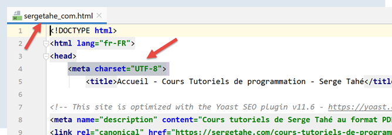
- lines 61–66: the allocated resources are released;
When running the [main.py] script, the following console output is displayed:
C:\Data\st-2020\dev\python\cours-2020\python3-flask-2020\venv\Scripts\python.exe C:/Data/st-2020/dev/python/cours-2020/python3-flask-2020/inet/http/02/main.py
-------------------------
sergetahe.com
-------------------------
Client: Starting communication with the server [sergetahe.com]
* Trying 87.98.154.146:80...
* TCP_NODELAY set
* Connected to sergetahe.com (87.98.154.146) port 80 (#0)
> GET / HTTP/1.1
Host: sergetahe.com
User-Agent: PycURL/7.43.0.5 libcurl/7.68.0 OpenSSL/1.1.1d zlib/1.2.11 c-ares/1.15.0 WinIDN libssh2/1.9.0 nghttp2/1.40.0
Accept: */*
* Mark bundle as not supporting multiuse
< HTTP/1.1 302 Found
< Date: Mon, 06 Jul 2020 06:45:52 GMT
< Content-Type: text/html; charset=UTF-8
< Transfer-Encoding: chunked
< Server: Apache
< X-Powered-By: PHP/7.3
< Location: http://sergetahe.com/cours-tutoriels-de-programmation
< Set-Cookie: SERVERID68971=26218|XwLIo|XwLIo; path=/
< X-IPLB-Instance: 17102
<
* Ignoring the response body
* Connection #0 to host sergetahe.com remains intact
* Sending another request to this URL: 'http://sergetahe.com/cours-tutoriels-de-programmation'
* Found bundle for host sergetahe.com: 0x25eacafb5d0 [serially]
* Cannot multiplex, even if we wanted to!
* Reusing existing connection! (#0) with host sergetahe.com
* Connected to sergetahe.com (87.98.154.146) port 80 (#0)
> GET /programming-tutorials HTTP/1.1
Host: sergetahe.com
User-Agent: PycURL/7.43.0.5 libcurl/7.68.0 OpenSSL/1.1.1d zlib/1.2.11 c-ares/1.15.0 WinIDN libssh2/1.9.0 nghttp2/1.40.0
Accept: */*
* Mark bundle as not supporting multiuse
< HTTP/1.1 301 Moved Permanently
< Date: Mon, 06 Jul 2020 06:45:52 GMT
< Content-Type: text/html; charset=iso-8859-1
< Content-Length: 262
< Server: Apache
< Location: http://sergetahe.com/cours-tutoriels-de-programmation/
< Set-Cookie: SERVERID68971=26218|XwLIo|XwLIo; path=/
< X-IPLB-Instance: 17102
<
* Ignoring the response body
* Connection #0 to host sergetahe.com left intact
* Sending another request to this URL: 'http://sergetahe.com/cours-tutoriels-de-programmation/'
* Found bundle for host sergetahe.com: 0x25eacafb5d0 [serially]
* Cannot multiplex, even if we wanted to!
* Reusing existing connection! (#0) with host sergetahe.com
* Connected to sergetahe.com (87.98.154.146) port 80 (#0)
> GET /programming-tutorials/ HTTP/1.1
Host: sergetahe.com
User-Agent: PycURL/7.43.0.5 libcurl/7.68.0 OpenSSL/1.1.1d zlib/1.2.11 c-ares/1.15.0 WinIDN libssh2/1.9.0 nghttp2/1.40.0
Accept: */*
* Mark bundle as not supporting multiuse
< HTTP/1.1 301 Moved Permanently
< Date: Mon, 06 Jul 2020 06:45:52 GMT
< Content-Type: text/html; charset=iso-8859-1
< Content-Length: 263
< Server: Apache
< Location: https://sergetahe.com/cours-tutoriels-de-programmation/
< Set-Cookie: SERVERID68971=26218|XwLIo|XwLIo; path=/
< X-IPLB-Instance: 17102
<
* Ignoring the response body
* Connection #0 to host sergetahe.com left intact
* Sending another request to this URL: 'https://sergetahe.com/cours-tutoriels-de-programmation/'
* Trying 87.98.154.146:443...
* TCP_NODELAY set
* ….
* Using Stream ID: 1 (easy handle 0x25eaec77010)
> GET /programming-tutorials/ HTTP/2
Host: sergetahe.com
user-agent: PycURL/7.43.0.5 libcurl/7.68.0 OpenSSL/1.1.1d zlib/1.2.11 c-ares/1.15.0 WinIDN libssh2/1.9.0 nghttp2/1.40.0
accept: */*
* Connection state changed (MAX_CONCURRENT_STREAMS == 128)!
< HTTP/2 200
< date: Mon, 06 Jul 2020 06:45:53 GMT
< content-type: text/html; charset=UTF-8
< server: Apache
< x-powered-by: PHP/7.3
< link: <https://sergetahe.com/cours-tutoriels-de-programmation/wp-json/>; rel="https://api.w.org/"
< link: <https://sergetahe.com/cours-tutoriels-de-programmation/>; rel=shortlink
< vary: Accept-Encoding
< x-iplb-instance: 17080
< set-cookie: SERVERID68971=26218|XwLIp|XwLIp; path=/
<
* Connection #1 to host sergetahe.com left intact
-------------------------
tahe.developpez.com
-------------------------
Client: Starting communication with the server [tahe.developpez.com]
* Trying 87.98.130.52:443...
* TCP_NODELAY set
* Connected to tahe.developpez.com (87.98.130.52) port 443 (#0)
* ALPN, offering h2
* ALPN, offering http/1.1
* SSL connection using TLSv1.3 / TLS_AES_256_GCM_SHA384
* ALPN, server supports HTTP/1.1
* Server certificate:
* subject: CN=*.developpez.com
* start date: Jul 1 15:38:30 2020 GMT
* expiration date: Sep 29 15:38:30 2020 GMT
* subjectAltName: host "tahe.developpez.com" matched cert's "*.developpez.com"
* issuer: C=US; O=Let's Encrypt; CN=Let's Encrypt Authority X3
* SSL certificate verify result: unable to get local issuer certificate (20), continuing anyway.
> GET / HTTP/1.1
Host: tahe.developpez.com
User-Agent: PycURL/7.43.0.5 libcurl/7.68.0 OpenSSL/1.1.1d zlib/1.2.11 c-ares/1.15.0 WinIDN libssh2/1.9.0 nghttp2/1.40.0
Accept: */*
* old SSL session ID is stale, removing
* Mark bundle as not supporting multiuse
< HTTP/1.1 200 OK
< Date: Mon, 06 Jul 2020 06:45:53 GMT
< Server: Apache/2.4.38 (Debian)
< X-Powered-By: PHP/5.3.29
< Vary: Accept-Encoding
< Transfer-Encoding: chunked
< Content-Type: text/html
<
* Connection #0 to host tahe.developpez.com remains open
-------------------------
www.polytech-angers.fr
-------------------------
Client: Starting communication with the server [www.polytech-angers.fr]
* Trying 193.49.144.41:80...
* TCP_NODELAY set
* Connected to www.polytech-angers.fr (193.49.144.41) port 80 (#0)
> GET / HTTP/1.1
Host: www.polytech-angers.fr
User-Agent: PycURL/7.43.0.5 libcurl/7.68.0 OpenSSL/1.1.1d zlib/1.2.11 c-ares/1.15.0 WinIDN libssh2/1.9.0 nghttp2/1.40.0
Accept: */*
* Mark bundle as not supporting multiuse
< HTTP/1.1 301 Moved Permanently
< Date: Mon, 06 Jul 2020 06:45:54 GMT
< Server: Apache/2.4.29 (Ubuntu)
< Location: http://www.polytech-angers.fr/fr/index.html
< Cache-Control: max-age=1
< Expires: Mon, 06 Jul 2020 06:45:55 GMT
< Content-Length: 339
< Content-Type: text/html; charset=iso-8859-1
<
* Ignoring the response body
* Connection #0 to host www.polytech-angers.fr left intact
* Sending another request to this URL: 'http://www.polytech-angers.fr/fr/index.html'
* Found bundle for host www.polytech-angers.fr: 0x25eacafb490 [serially]
* Cannot multiplex, even if we wanted to!
* Reusing existing connection! (#0) with host www.polytech-angers.fr
* Connected to www.polytech-angers.fr (193.49.144.41) port 80 (#0)
> GET /fr/index.html HTTP/1.1
Host: www.polytech-angers.fr
User-Agent: PycURL/7.43.0.5 libcurl/7.68.0 OpenSSL/1.1.1d zlib/1.2.11 c-ares/1.15.0 WinIDN libssh2/1.9.0 nghttp2/1.40.0
Accept: */*
* Mark bundle as not supporting multiuse
< HTTP/1.1 200 OK
< Date: Mon, 06 Jul 2020 06:45:54 GMT
< Server: Apache/2.4.29 (Ubuntu)
< Last-Modified: Mon, 06 Jul 2020 04:50:09 GMT
< ETag: "85be-5a9be9bfcf228"
< Accept-Ranges: bytes
< Content-Length: 34238
< Cache-Control: max-age=1
< Expires: Mon, 06 Jul 2020 06:45:55 GMT
< Vary: Accept-Encoding
< Content-Type: text/html; charset=UTF-8
< Content-Language: fr
<
* Connection #0 to host www.polytech-angers.fr left intact
-------------------------
localhost
-------------------------
Client: Starting communication with the server [localhost]
* Trying ::1:80...
* TCP_NODELAY set
* Connected to localhost (::1) port 80 (#0)
> GET / HTTP/1.1
Host: localhost
User-Agent: PycURL/7.43.0.5 libcurl/7.68.0 OpenSSL/1.1.1d zlib/1.2.11 c-ares/1.15.0 WinIDN libssh2/1.9.0 nghttp2/1.40.0
Accept: */*
* Mark bundle as not supporting multiuse
< HTTP/1.1 200 OK
< Date: Mon, 06 Jul 2020 06:45:54 GMT
< Server: Apache/2.4.35 (Win64) OpenSSL/1.1.1b PHP/7.2.19
< X-Powered-By: PHP/7.2.19
< Content-Length: 1776
< Content-Type: text/html; charset=UTF-8
<
* Connection #0 to host localhost left intact
Done...
Process finished with exit code 0
Comments
- in blue, the HTTP commands sent to the server;
- in green, the data received by the client in response;
- we get the same exchanges as with the [curl] tool;
- line 9: the URL [http://sergetahe.com/] is requested;
- line 15: the server responds that the page has moved. Line 21, the new URL;
- line 32: the URL [http://sergetahe.com/cours-tutoriels-de-programmation] is requested;
- line 38: the server responds that the page has moved. Line 43, the new URL;
- line 54: the URL [http://sergetahe.com/cours-tutoriels-de-programmation/] is requested;
- line 60: the server responds that the page has moved. Line 65, the new URL. It uses the secure protocol [HTTPS];
- Lines 71–75: The secure protocol is established with the server;
- line 76: the URL [https://sergetahe.com/cours-tutoriels-de-programmation/] is requested;
- line 82: the requested document was found;
21.4.6. Conclusion
In this section, we explored the HTTP protocol and wrote a script [http/02/main.py] capable of downloading a URL from the web.
21.5. The SMTP (Simple Mail Transfer Protocol)
21.5.1. Introduction
In this chapter:
- [Server B] will be a local SMTP server that we will install;
- [Client A] will be an SMTP client in various forms:
- the [RawTcpClient] client to explore the SMTP protocol;
- a Python script that emulates the SMTP protocol of the [RawTcpClient] client;
- a Python script using the [smtplib] module to send all kinds of emails;
21.5.2. Creating a [Gmail] address
To perform our SMTP tests, we’ll need an email address to send to. To do this, we’ll create a Gmail address [https://www.google.com/intl/fr/gmail/about/]:
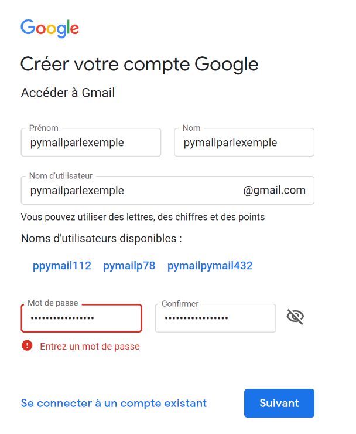
Note: Send a few emails to the address you created. Do not proceed until you are sure that the account you created is able to receive emails.
21.5.3. Installing an SMTP server
For our tests, we will install the [hMailServer] mail server, which is both an SMTP server for sending emails, a POP3 (Post Office Protocol) server for reading emails stored on the server, and an IMAP (Internet Message Access Protocol) server that also allows you to read emails stored on the server but goes beyond that. In particular, it allows you to manage email storage on the server.
The [hMailServer] mail server is available at the URL [https://www.hmailserver.com/] (May 2019).

During installation, you will be asked for certain information:

- in [1-2], select both the mail server and the tools to administer it;
- During installation, you will be prompted for the administrator password: make a note of it, as you will need it;
[hMailServer] installs as a Windows service that starts automatically when the computer boots up. It is best to choose a manual startup:
- In [3], type [services] in the search box on the taskbar;
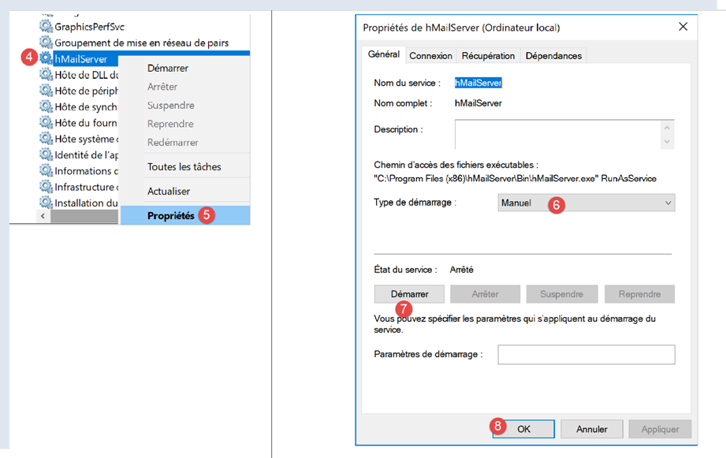
- In [4-8], set the service to [Manual] mode (6), then start it (7);
Once started, the [hMailServer] must be configured. The server was installed with an administration program [hMailServer Administrator]:

- in [2], in the status bar’s search box, type [hmailserver];
- In [3], launch the administrator;
- In [4], connect the administrator to the [hMailServer] server;
- in [5], enter the password you entered during the installation of [hMailServer];
If you have forgotten the password, proceed as follows:
- stop the [hMailServer] server;
- open the file [<hmailserver>/bin/hmailserver.ini], where <hmailserver> is the server’s installation directory:
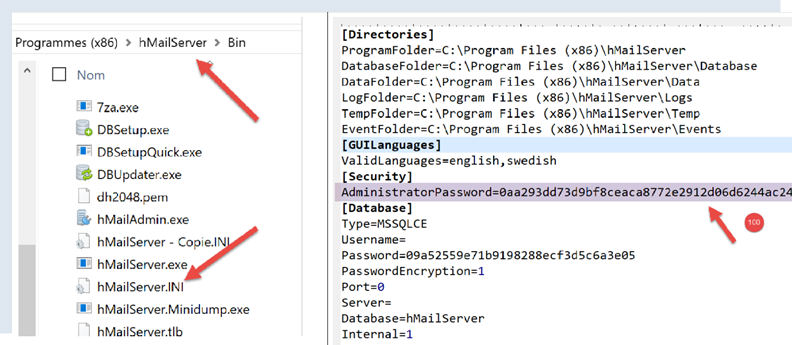
- In [100], remove the password from the [AdministratorPassword] line. This will result in the administrator no longer having a password. Simply press [Enter] when prompted;
ValidLanguages=english,swedish
[Security]
AdministratorPassword=
[Database]
Let’s continue configuring the server:

- In [1-2], add a domain (if one doesn’t already exist);

- in [3], you can enter just about anything for the tests we’re going to run. In reality, you would need to enter the name of an existing domain;
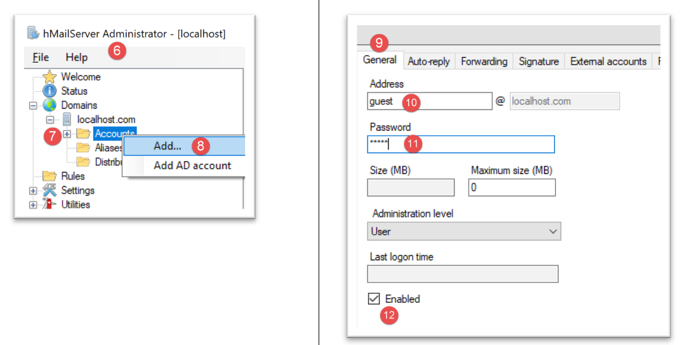
We’re going to create a user account:
- right-click on [Accounts] (7) then (8) to add a new user;
- in the [General] tab (9), we define a user named [guest] (10) with the password [guest] (11). Their email address will be [guest@localhost] (10);
- In [12], the [guest] user is enabled;

- in [13-14], the user is created;
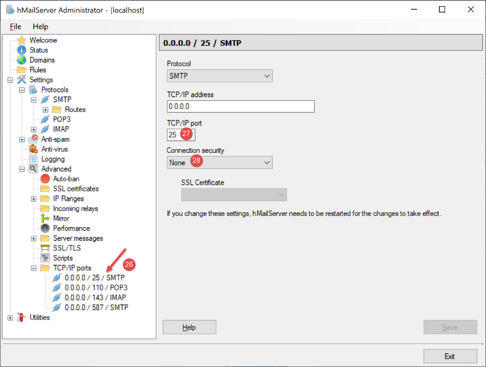
- in [27], the SMTP service port;
- In [28], this service does not require authentication;
- in [30], enter the welcome message that the SMTP server will send to its clients;
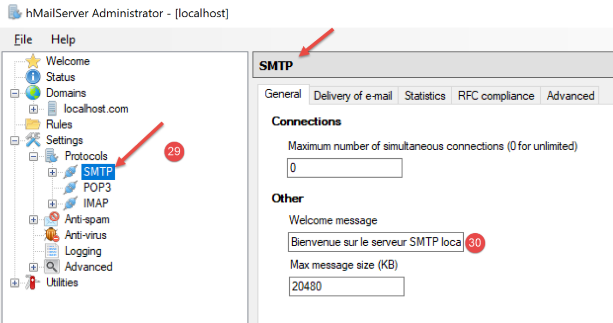
We do the same with the POP3 server:

We do the same for the IMAP server:

We specify the default domain of the [hMailServer] server (there may be several) :

- In [37], specify that the default SMTP server domain is the one you created in [38];
After saving this configuration, you can test it as follows. Open a PyCharm terminal in the utilities folder:

Then type the following command:
(venv) C:\Data\st-2020\dev\python\cours-2020\python3-flask-2020\inet\utilitaires>RawTcpClient.exe localhost 25
Client [DESKTOP-30FF5FB:50170] connected to server [localhost-25]
Type your commands (quit to stop):
<-- [220 Welcome to the localhost.com SMTP server]
- Line 1: We connect to port 25 on the [localhost] machine. This is where an unsecured SMTP server from the [hMailServer] server is running;
- line 4: we receive the welcome message that we configured in step 30 above;
The SMTP server is now up and running. Type the command [quit] to end the session with SMTP server 25.
Now let’s do the same with port 587, which is the default port for the secure SMTP mail relay service:
(venv) C:\Data\st-2020\dev\python\cours-2020\python3-flask-2020\inet\utilitaires>RawTcpClient.exe localhost 587
Client [DESKTOP-30FF5FB:50217] connected to server [localhost-587]
Type your commands (quit to stop):
<-- [220 Welcome to the localhost.com SMTP server]
- line 4, the response from the SMTP server running on port 587;
Now let’s do the same with port 110, which is the default port for the POP3 mail retrieval service:
(venv) C:\Data\st-2020\dev\python\cours-2020\python3-flask-2020\inet\utilitaires>RawTcpClient.exe localhost 110
Client [DESKTOP-30FF5FB:50210] connected to server [localhost-110]
Type your commands (quit to exit):
<-- [+OK Welcome to the localhost.com POP3 server]
- line 4, we received the welcome message from the POP3 server;
Now let’s do the same with port 143, which is the default port for the IMAP mail retrieval service:
(venv) C:\Data\st-2020\dev\python\cours-2020\python3-flask-2020\inet\utilitaires>RawTcpClient.exe localhost 143
Client [DESKTOP-30FF5FB:50212] connected to server [localhost-143]
Type your commands (quit to stop):
<-- [* OK Welcome to the IMAP server localhost.com]
- line 4, we received the welcome message from the IMAP server;
21.5.4. Installing an email client
To read the email we are going to send, we need an email client. For those who don’t have one, we’ll show you how to install and configure [Thunderbird]:
- Step [1]: Download [Thunderbird] and install it;

- Start the [hMailServer] mail server if it isn’t already running;
- in [2-3]: once Thunderbird is running, we will create an email account for the [guest@localhost] user on the [hMailServer] mail server;

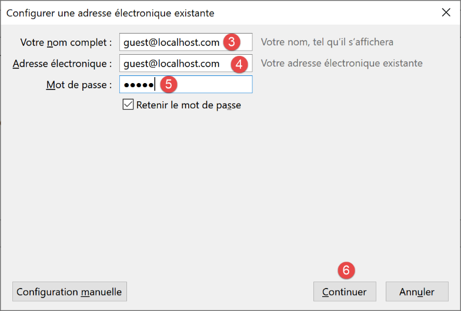

- in [7-11]: the POP3 server that will allow us to read mail from the [hMailServer] mail server is located at [localhost] and runs on port 110;
- in [12-16]: the SMTP server that will allow us to send mail on behalf of users of the [hMailServer] mail server is located at [localhost] and runs on port 25;
- [18]: You can test whether this configuration is valid;
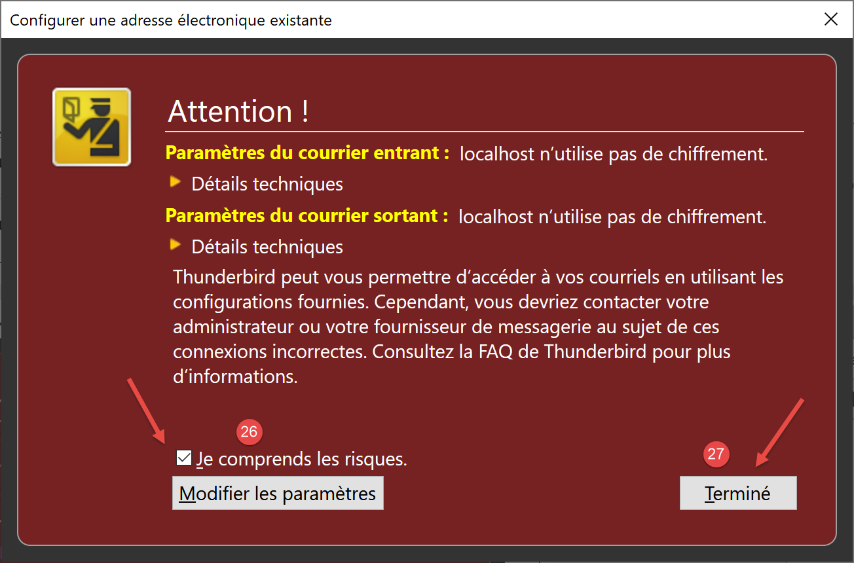
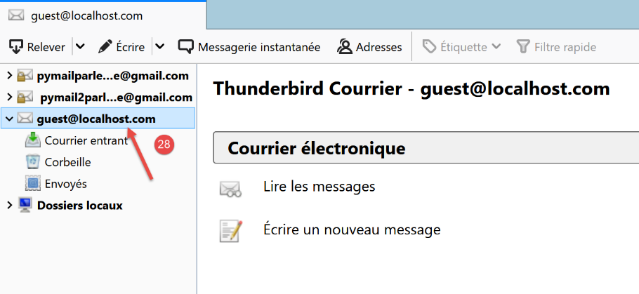
- in [26]: because there is no SSL encryption, Thunderbird warns us that our configuration poses risks;
- in [28]: the account has been created;
To test the created account, we will use Thunderbird to:
- send an email to the user [guest@localhost.com] (SMTP protocol);
- read the email received by this user (POP3 protocol);

- in [3]: the sender;
- in [4]: the recipient;
- in [5]: the email subject;
- in [6]: the email content;
- in [7]: to send the email;

- in [8-9]: retrieve the user's email [guest@localhost];
- in [10-15]: the received message;
We will also send an email to the user [pymailparlexemple@gmail.com]. Let’s create an account for them in Thunderbird so they can read the email they receive:


- in [4]: enter whatever you want;
- in [5]: the address is [pymailparlexemple@gmail.com];
- in [6]: enter the password you assigned to this user when you created the account;
- in [7]: confirm this configuration;

- in [8]: Thunderbird has retrieved the following information from its database;
- in [9]: the email retrieval protocol is no longer POP3 but IMAP. The main difference between the two is that [POP3] downloads read emails to the local machine where the email client is located and deletes them from the remote server, whereas [IMAP] keeps the emails on the remote server;
- in [10]: SMTP server identification;
- in [13]: to get more information about the IMAP and SMTP servers, switch to manual configuration;

- in [14-17]: IMAP server settings;
- in [18-21]: SMTP server settings;
- in [22]: complete the configuration;

- in [23-24]: the new Thunderbird account;
- in [26]: write a new message;

- in [27]: the sender is [pymailparlexemple@gmail.com];
- in [28]: the recipient is [pymailparlexemple@gmail.com];
- in [29-30]: the message;
- in [31]: to send it;

- in [32]: we check the mail from the various accounts;

- in [33-36]: the email received by the user [pymailparlexemple@gmail.com]
We also create:
- a new Gmail account [pymail2parlexemple@gmail.com];
- a new Thunderbird account [pymail2parlexemple@gmail.com] to retrieve messages for the user of the same name:


We now have the tools to explore the SMTP, POP3, and IMAP protocols. We’ll start with the SMTP protocol.
21.5.5. The SMTP Protocol

We will explore the SMTP protocol by examining the logs of the [hMailServer] server. To do this, we enable them using the [hMailServerAdministrator] tool:
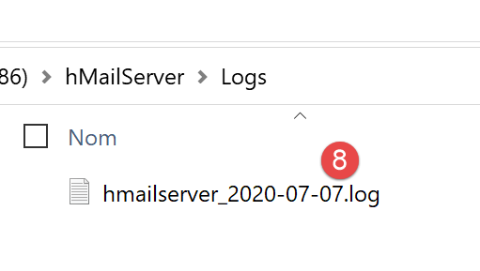
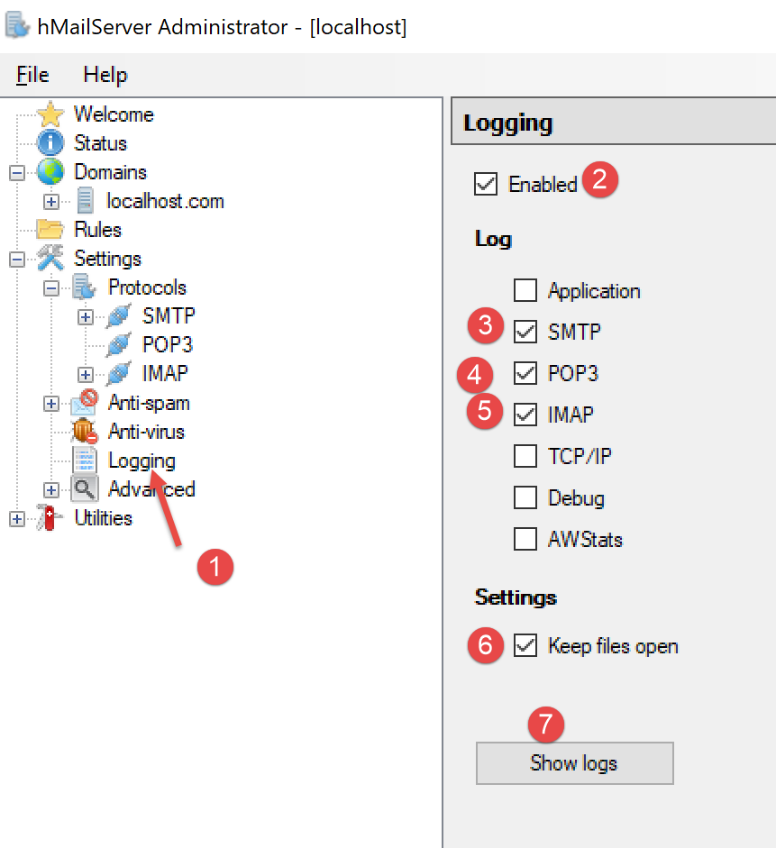
- In [2], the logs are enabled;
- in [3-5]: we enable them for the SMTP, POP3, and IMAP protocols;
- in [7], we request to view them;
- in [8], open the log file with any text editor;
In the following example, the client will be [Thunderbird] and the server will be [hMailServer]. Using Thunderbird, have the user [guest@localhost.com] send a message to themselves:
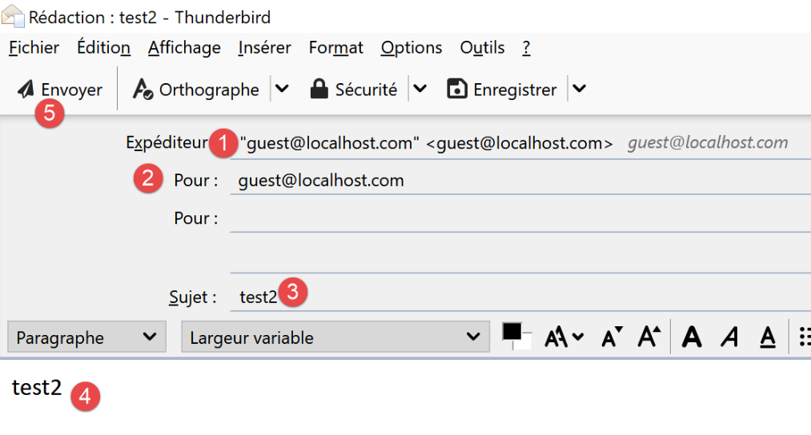
The logs will then look like this:
"SMTPD" 5828 22 "2020-07-07 10:02:54.263" "127.0.0.1" "SENT: 220 Welcome to the localhost.com SMTP server"
"SMTPD" 21956 22 "2020-07-07 10:02:54.360" "127.0.0.1" "RECEIVED: EHLO [127.0.0.1]"
"SMTPD" 21956 22 "2020-07-07 10:02:54.362" "127.0.0.1" "SENT: 250-DESKTOP-30FF5FB[nl]250-SIZE 20480000[nl]250-AUTH LOGIN[nl]250 HELP"
"SMTPD" 5828 22 "2020-07-07 10:02:54.381" "127.0.0.1" "RECEIVED: MAIL FROM:<guest@localhost.com> SIZE=433"
"SMTPD" 5828 22 "2020-07-07 10:02:54.386" "127.0.0.1" "SENT: 250 OK"
"SMTPD" 21956 22 "2020-07-07 10:02:54.470" "127.0.0.1" "RECEIVED: RCPT TO:<guest@localhost.com>"
"SMTPD" 21956 22 "2020-07-07 10:02:54.473" "127.0.0.1" "SENT: 250 OK"
"SMTPD" 21956 22 "2020-07-07 10:02:54.478" "127.0.0.1" "RECEIVED: DATA"
"SMTPD" 21956 22 "2020-07-07 10:02:54.479" "127.0.0.1" "SENT: 354 OK, send."
"SMTPD" 21860 22 "2020-07-07 10:02:54.496" "127.0.0.1" "SENT: 250 Queued (0.016 seconds)"
"SMTPD" 21568 22 "2020-07-07 10:02:54.505" "127.0.0.1" "RECEIVED: QUIT"
"SMTPD" 21568 22 "2020-07-07 10:02:54.506" "127.0.0.1" "SENT: 221 goodbye"
The lines above describe the dialogue that took place between the SMTP client (the Thunderbird email client) and the SMTP server (hMailServer). The [SENT] lines indicate what the SMTP server sent to its client. The [RECEIVED] lines indicate what the SMTP server received from its client.
- Line 1: Immediately after the client connects to the SMTP server, the server sends a welcome message to the client;
- line 2: the client sends the [EHLO] command to identify itself. Here, it provides its IP address [127.0.0.1], which refers to the machine [localhost], i.e., the machine running the SMTP client;
- Line 3: The server sends a series of [250] responses. [nl] stands for [newline], i.e., the \n character. The responses are in the form [250-] except for the last one, which is in the form [250 ]. This is how the SMTP client knows that the SMTP server’s response is complete and that it can send a command. The series of [250] commands was intended to indicate to the SMTP client a set of commands it could use;
- line 4: the SMTP client sends the command [MAIL FROM: sender_email_address], which indicates who is sending the message;
- line 5: the SMTP server responds with [250 OK], indicating that it has understood the command;
- line 6: the SMTP client sends the command [RCPT TO: recipient_email_address] to specify the recipient’s address;
- Line 7: The SMTP server again indicates that it has understood the command;
- line 8: the SMTP server sends the command [DATA]. This means it is going to send the message content;
- Line 9: The SMTP server indicates with the response [354 OK] that it is ready to receive the message. The text [send .] indicates that the SMTP client must end its message with a line containing only a single period;
- What we don’t see next is that the SMTP client sends its message. The logs do not display this;
- Line 10: The SMTP client has sent the period indicating the end of the message. The SMTP server responds that it has queued the message;
- the SMTP client sends the [QUIT] command to indicate that it is closing the connection;
- Line 12: The server responds;
Now that we understand the client/server dialogue of the SMTP protocol, let’s try to replicate it with our [RawTcpClient]. We’ll use a PyCharm terminal:

Let’s look at a new example:
- Client A will be the generic TCP client [RawTcpClient];
- Server B will be the mail server [hMailServer];
- Client A will ask Server B to deliver an email sent by the user [guest@localhost.com] to itself;
- we will verify that the recipient has indeed received the sent email;
We launch the client as follows:
(venv) C:\Data\st-2020\dev\python\cours-2020\python3-flask-2020\inet\utilitaires>RawTcpClient.exe localhost 25 --quit bye
Client [DESKTOP-30FF5FB:53122] connected to server [localhost-25]
Type your commands (quit to stop):
<-- [220 Welcome to the localhost.com SMTP server]
- line [1], we connect to port 25 on the local machine, where the [hMailServer] SMTP service runs. The argument [--quit bye] indicates that the user will exit the program by typing the command [bye]. Without this argument, the command to end the program is [quit]. However, [quit] is also an SMTP protocol command. We must therefore avoid this ambiguity;
- line [2], the client is successfully connected;
- line [3], the client is waiting for commands entered from the keyboard;
- line [4], the server sends the client its welcome message;
We continue the dialogue as follows:
(venv) C:\Data\st-2020\dev\python\cours-2020\python3-flask-2020\inet\utilitaires>RawTcpClient.exe localhost 25
Client [DESKTOP-30FF5FB:53155] connected to server [localhost-25]
Type your commands (quit to stop):
<-- [220 Welcome to the SMTP server localhost.com]
EHLO localhost
<-- [250-DESKTOP-30FF5FB]
<-- [250-SIZE 20480000]
<-- [250-AUTH LOGIN]
<-- [250 HELP]
MAIL FROM: guest@localhost.com
<-- [250 OK]
RCPT TO: guest@localhost.com
<-- [250 OK]
DATA
<-- [354 OK, send.]
from: guest@localhost.com
to: guest@localhost.com
subject: this is a test
line1
line2
.
<-- [250 Queued (37.824 seconds)]
QUIT
End of connection with the server
- in [5], the client sends the command [EHLO client-machine-name]. The server responds with a series of messages in the form [250-xx] (6). The code [250] indicates that the command sent by the client was successful;
- In [10], the client specifies the message sender, in this case [guest@localhost.com];
- in [11], the server's response;
- in [12], the message recipient is indicated, in this case the user [guest@localhost.com];
- in [13], the server's response;
- in [14], the [DATA] command tells the server that the client is about to send the message content;
- in [15], the server’s response;
- in [16-22], the client must send a list of text lines ending with a line containing only a single period. The message may contain [Subject:, From:, To:] lines (16-18) to define the message subject, sender, and recipient, respectively;
- in [19], the preceding headers must be followed by a blank line;
- in [20-21], the message text;
- in [22], the line containing only a single period, which indicates the end of the message;
- in [23], once the server has received the line containing only a single period, it queues the message;
- in [24], the client tells the server that it is finished;
- in [25], we see that the server has closed the connection to the client;
Now let’s check in Thunderbird that the user [guest@localhost.com] has indeed received the message:

- In [1-6], we see that the user [guest@localhost.com] has indeed received the message;
Finally, our client [RawTcpClient] successfully sent a message via the SMTP server [localhost]. Now, let’s use the same method to send a message to [pymailparlexemple@gmail.com]:
(venv) C:\Data\st-2020\dev\python\cours-2020\python3-flask-2020\inet\utilitaires>RawTcpClient.exe smtp.gmail.com 587
Client [DESKTOP-30FF5FB:53210] connected to server [smtp.gmail.com-587]
Type your commands (quit to stop):
<-- [220 smtp.gmail.com ESMTP w13sm643278wrr.67 - gsmtp]
EHLO localhost
<-- [250-smtp.gmail.com at your service, [2a01:cb05:80e8:b500:3c4b:2203:91fa:9b00]]
<-- [250-SIZE 35882577]
<-- [250-8BITMIME]
<-- [250-STARTTLS]
<-- [250-ENHANCEDSTATUSCODES]
<-- [250-PIPELINING]
<-- [250-CHUNKING]
<-- [250 SMTPUTF8]
MAIL FROM: pymailparlexemple@gmail.com
<-- [530 5.7.0 Must issue a STARTTLS command first. w13sm643278wrr.67 - gsmtp]
QUIT
End of connection with the server
- line 1: we are using Gmail’s SMTP server, which operates on port 587;
- line 15: we are blocked because the SMTP server is asking us to establish a secure connection, which we do not know how to do. Unlike the previous example, the server [smtp.gmail.com] (line 1) requires authentication. It only accepts clients who are registered in the [gmail.com] domain. This authentication is secure and takes place over an encrypted connection.
The first example gave us the basics for building a basic SMTP client in Python. The second showed us that some SMTP servers (most, in fact) require authentication via an encrypted connection.
21.5.6. scripts [smtp/01]: a basic SMTP client
We are going to implement in Python what we learned earlier about the SMTP protocol.

The [smtp/01/config] file configures the application as follows:
def configure() -> dict:
return {
# description: description of the email sent
# smtp-server: SMTP server
# smtp-port: SMTP server port
# from: sender
# to: recipient
# subject: email subject
# message: email message
"mails": [
{
"description": "email to localhost via localhost",
"smtp-server": "localhost",
"smtp-port": "25",
"from": "guest@localhost.com",
"to": "guest@localhost.com",
"subject": "to localhost via localhost",
# sending UTF-8
"content-type": 'text/plain; charset="utf-8"',
# testing accented characters
"message": "aglaë séléné\ngoes to the market\nto buy flowers"
},
{
"description": "email to Gmail via Gmail",
"smtp-server": "smtp.gmail.com",
"smtp-port": "587",
"from": "pymailparlexemple@gmail.com",
"to": "pymailparlexemple@gmail.com",
"subject": "to Gmail via Gmail",
# sending UTF-8
"Content-type": 'text/plain; charset="utf-8"',
# testing accented characters
"message": "aglaë séléné\ngoes to the market\nto buy flowers"
}
]
}
- Lines 10–35: a list of emails to send. For each one, the following information is specified:
- [description]: a text describing the email;
- [smtp-server]: the SMTP server to use;
- [smtp-port]: its service port;
- [from]: the sender of the email;
- [to]: the email recipient;
- [subject]: the subject of the email;
- [content-type]: the email encoding;
- [message]: the email message;
The [01/main] code for the SMTP client is as follows:
# imports
import socket
# -----------------------------------------------------------------------
def sendmail(mail: dict, verbose: bool):
# sends a message to the SMTP server smtpserver on behalf of sender
# to recipient. If verbose=True, logs client-server exchanges
# system errors are passed up
connection = None
try:
# name of the local machine (required by the SMTP protocol)
client = socket.gethostbyaddr(socket.gethostbyname("localhost"))[0]
# Open a connection on port 25 of smtpServer
connection = socket.create_connection((mail["smtp-server"], 25))
# connection represents a bidirectional communication channel
# between the client (this program) and the contacted SMTP server
# This channel is used for exchanging commands and information
# After the connection is established, the server sends a welcome message, which we read
send_command(connection, "", verbose, True)
# EHLO command:
send_command(connection, f"EHLO {client}", verbose, True)
# EHLO command:
send_command(connection, f"MAIL FROM: <{mail['from']}>", verbose, True)
# rcpt to command:
send_command(connection, f"RCPT TO: <{mail['to']}>", verbose, True)
# data command
send_command(connection, "DATA", verbose, True)
# preparing the message to send
# it must contain the following lines
# From: sender
# To: recipient
# blank line
# Message
# .
data = f"{mail['message']}"
# send message
send_command(connection, data, verbose, False)
# send .
send_command(connection, "\r\n.\r\n", verbose, False)
# quit command
send_command(connection, "QUIT", verbose, True)
# end
finally:
# close connection
if connection:
connection.close()
# --------------------------------------------------------------------------
def send_command(connection: socket, command: str, verbose: bool, with_rclf: bool):
# sends command to the connection channel
# verbose mode if verbose=True
# if with_rclf=True, appends the rclf sequence to command
# data
rclf = "\r\n" if with_rclf else ""
# send command if command is not empty
if command:
# let system errors propagate
#
# send command
connection.send(bytearray(f"{command}{rclf}", 'utf-8'))
# optional echo
if verbose:
display(command, 1)
# read response of fewer than 1000 characters
response = str(connection.recv(1000), 'utf-8')
# print response
if verbose:
display(response, 2)
# retrieve error code
errorCode = int(response[0:3])
# Error returned by the server?
if errorCode >= 500:
# throw an exception with the error
raise BaseException(response[4:])
# return without error
# --------------------------------------------------------------------------
def display(transaction: str, direction: int):
# displays exchange on the screen
# if direction=1, display -->exchange
# if direction=2, display <-- exchange without the last 2 characters (rclf)
if direction == 1:
print(f"--> [{exchange}]")
return
elif direction == 2:
l = len(exchange)
print(f"<-- [{exchange[0:l - 2]}]")
return
# main ----------------------------------------------------------------
# SMTP (Simple Mail Transfer Protocol) client for sending a message
# the information is taken from a config file containing the following information for each server
# description: description of the email being sent
# smtp-server: SMTP server
# smtp-port: SMTP server port
# from: sender
# to: recipient
# subject: email subject
# message: email message
# SMTP client-server communication protocol
# -> client connects to port 25 of the SMTP server
# <- server sends a welcome message
# -> client sends the EHLO command: its hostname
# <- server responds with OK or not
# -> client sends the mail from command: <sender>
# <- server responds with OK or not
# -> client sends the rcpt to command: <recipient>
# <- server responds OK or not
# -> client sends the data command
# <- server responds OK or not
# -> client sends all lines of its message and ends with a line containing only the character .
# <- server responds OK or not
# -> client sends the quit command
# <- server responds with OK or not
# Server responses are in the form xxx text, where xxx is a 3-digit number. Any number xxx >=500
# indicates an error. The response may consist of multiple lines, all beginning with xxx- except for the last
# in the form xxx(space)
# the exchanged text lines must end with the characters RC(#13) and LF(#10)
# application configuration
import config
config = config.configure()
# process emails one by one
for email in config['emails']:
try:
# logs
print("----------------------------------")
print(f"Sending message [{mail['description']}]")
# preparing the message to be sent
mail[
"message"] = f"From: {mail['from']}\nTo: {mail['to']}\n" \
f"Subject: {mail['subject']}\n" \
f"Content-type: {mail['content-type']}" \
f"\n\n{mail['message']}"
# send the message in verbose mode
sendmail(mail, True)
# end
print("Message sent...")
except BaseException as error:
# display the error
print(f"The following error occurred: {error}")
finally:
pass
# next email
Comments
- lines 134–136: configure the application;
- lines 139–151: we process all emails found in the configuration;
- lines 141–143: display what we are going to do;
- lines 144–149: define the message to be sent. The message [message] is preceded by the headers [From, To, Subject, Content-type];
- line 151: the email is sent using the [sendmail] function, which takes two parameters:
- [mail]: the dictionary containing the information needed to send the email;
- [verbose]: a Boolean indicating whether or not client/server exchanges should be logged to the console;
- lines 154–156: all exceptions thrown by the [sendmail] function are caught. They are displayed;
- line 6: [mail] is the dictionary describing the email to be sent;
- line 14: in the SMTP protocol, the client must send its name. Here, we retrieve the name of the local machine that will act as the client;
- line 16: connects to the SMTP server to which the message will be sent;
- lines 22–23: if the connection to the SMTP server was successful, the server will send a welcome message, which is read here;
- The [sendmail] function then sends the various commands that an SMTP client must send:
- lines 24–25: the EHLO command;
- lines 26–27: the MAIL FROM: command;
- lines 28–29: the RCPT TO: command;
- lines 30–31: the DATA command;
- lines 32–41: sending the message (From, To, Subject, Content-type, text);
- lines 42-43: sending the end-of-message character;
- lines 44-457: the QUIT command, which terminates the client's dialogue with the SMTP server;
- the [sendmail] execution runs within a [try / finally] block that allows all exceptions to be propagated to the calling code. We know that the calling code catches all of them to display them;
- lines 48–50: release of resources;
- line 54: the [send_command] function is responsible for sending the client’s commands to the SMTP server. It takes four parameters:
- [connection]: the connection linking the client to the server;
- [command]: the command to send;
- [verbose]: if TRUE, then client/server exchanges are logged to the console;
- [with_rclf]: If TRUE, sends the command terminated by the \r\n sequence. This is required for all SMTP protocol commands, but [send_command] is also used to send the message. In that case, the \r\n sequence is not added;
- line 62: the command is sent only if it is not empty;
- lines 65-66: the command is sent to the server as a UTF-8 byte string;
- lines 70-71: read all lines of the response. We assume it is less than 1000 characters. The response may contain multiple lines. Each line has the form XXX-YYY, where XXX is a numeric code, except for the last line of the response, which has the form XXX YYY (no hyphen);
- lines 76: reads the error code XXX from the first line;
- lines 78–80: if the numeric code XXX is greater than 500, then the server has returned an error. An exception is then thrown;
Results
Running the script produces the following console output:
C:\Data\st-2020\dev\python\cours-2020\python3-flask-2020\venv\Scripts\python.exe C:/Data/st-2020/dev/python/cours-2020/python3-flask-2020/inet/smtp/01/main.py
----------------------------------
Sending the message [mail to localhost via localhost]
--> [EHLO DESKTOP-30FF5FB]
<-- [220 Welcome to the localhost.com SMTP server]
--> [MAIL FROM: <guest@localhost.com>]
<-- [250-DESKTOP-30FF5FB
250-SIZE 20480000
250-AUTH LOGIN
250 HELP]
--> [RCPT TO: <guest@localhost.com>]
<-- [250 OK]
--> [DATA]
<-- [250 OK]
--> [From: guest@localhost.com
To: guest@localhost.com
Subject: to localhost via localhost
Content-type: text/plain; charset="utf-8"
Aglaë Séléné
go to the market
to buy flowers]
<-- [354 OK, send.]
--> [
.
]
<-- [250 Queued (0.000 seconds)]
--> [QUIT]
<-- [221 goodbye]
Message sent...
----------------------------------
Sending message [email to Gmail via Gmail]
--> [EHLO DESKTOP-30FF5FB]
<-- [220 smtp.gmail.com ESMTP u1sm1364433wrb.78 - gsmtp]
--> [MAIL FROM: <pymailparlexemple@gmail.com>]
<-- [250-smtp.gmail.com at your service, [2a01:cb05:80e8:b500:3c4b:2203:91fa:9b00]
250-SIZE 35882577
250-8BITMIME
250-STARTTLS
250-ENHANCEDSTATUSCODES
250-PIPELINING
250-CHUNKING
250 SMTPUTF8]
--> [RCPT TO: <pymailparlexemple@gmail.com>]
<-- [530 5.7.0 Must issue a STARTTLS command first. u1sm1364433wrb.78 - gsmtp]
The following error occurred: 5.7.0 Must issue a STARTTLS command first. u1sm1364433wrb.78 - gsmtp
Process finished with exit code 0
- Lines 3–30: Using the SMTP server [hMailServer] to send an email to [guest@localhost] works fine;
- Lines 32–46: Using the SMTP server [smtp.gmail.com] to send an email to [pymailparlexemple@gmail.com] fails: on line 45, the SMTP server returns error code 530 with an error message. This indicates that the SMTP client must first authenticate via a secure connection. Our client did not do so and is therefore rejected;
The results in Thunderbird are as follows:

21.5.7. scripts [smtp/02]: an SMTP client written using the [smtplib] library

The previous client has at least two shortcomings:
- it cannot use a secure connection if the server requires one;
- it cannot attach files to the message;
We will address the first shortcoming in the [smtp/02] script. In our new script, we will use the Python [smtplib] module.
The [smtp/02/main] script will use the following JSON configuration file [smtp/02/config]:
def configure() -> dict:
return {
# description: description of the email sent
# smtp-server: SMTP server
# smtp-port: SMTP server port
# from: sender
# to: recipient
# subject: email subject
# message: email message
"mails": [
{
"description": "Email to localhost via localhost using smtplib",
"smtp-server": "localhost",
"smtp-port": "25",
"from": "guest@localhost.com",
"to": "guest@localhost.com",
"subject": "to localhost via localhost using smtplib",
# testing accented characters
"message": "aglaë séléné\ngoes to the market\nto buy flowers",
},
{
"description": "email to Gmail via Gmail using smtplib",
"smtp-server": "smtp.gmail.com",
"smtp-port": "587",
"from": "pymail2parlexemple@gmail.com",
"to": "pymail2parlexemple@gmail.com",
"subject": "Sending to Gmail via Gmail using smtplib",
# testing accented characters
"message": "Aglaë Séléné\nis going to the market\nto buy flowers",
# SMTP with authentication
"user": "pymail2parlexemple@gmail.com",
"password": "#6prIlh@1QZ3TG",
}
]
}
The same fields are present as in the [smtp/01/config] file, with two additional fields when the SMTP server requires authentication:
- line 31, [user]: the username used to authenticate the connection;
- line 32, [password]: their password;
These two fields are only present if the SMTP server being contacted requires authentication. This is then performed via a secure connection.
The code for the [smtp/02/main.py] script is as follows:
# imports
import smtplib
from email.mime.text import MIMEText
from email.utils import formatdate
# -----------------------------------------------------------------------
def sendmail(mail: dict, verbose: True):
# sends a message to the SMTP server smtpserver on behalf of the sender
# to recipient. If verbose=True, logs client-server exchanges
# we use the smtplib library
# we let exceptions propagate
#
# the SMTP server
server = smtplib.SMTP(mail["smtp-server"])
# verbose mode
server.set_debuglevel(verbose)
# Secure connection?
if "user" in mail:
# secure connection
server.starttls()
# EHLO command + authentication
server.login(mail["user"], mail["password"])
# Creating a multipart message - this is the multipart message that will be sent
msg = MIMEText(mail["message"])
msg['from'] = mail["from"]
msg['to'] = mail["to"]
msg['date'] = formatdate(localtime=True)
msg['subject'] = mail["subject"]
# send the message
server.send_message(msg)
# exit
server.quit()
# main ----------------------------------------------------------------
# The information is taken from a config file containing the following information for each server
# description: description of the email sent
# smtp-server: SMTP server
# smtp-port: SMTP server port
# from: sender
# to: recipient
# subject: email subject
# content-type: email encoding
# message: email message
# application configuration
import config
config = config.configure()
# process emails one by one
for email in config['emails']:
try:
# logs
print("----------------------------------")
print(f"Sending message [{mail['description']}]")
# sending the message in verbose mode
sendmail(mail, True)
# end
print("Message sent...")
except BaseException as error:
# display the error
print(f"The following error occurred: {error}")
finally:
pass
# next email
Comments
- lines 8–35: only the [sendmail] function is used. It will now use the [smtplib] module (line 2);
- Line 16: Connect to the SMTP server;
- line 18: if [verbose=True], client/server exchanges will be displayed on the console;
- lines 20–24: authentication is performed if required by the SMTP server;
- line 22: authentication is performed over a secure connection;
- line 24: authentication;
- lines 26–33: sending the message. The dialogue with the [smtp/01/main] script will then take place. If authentication occurred, it will take place over a secure connection;
- line 35: the client/server dialogue ends;
Before running the [smtp/02/main] script, you must modify the Gmail account settings [pymailparlexemple@gmail.com]:
- Log in to the Gmail account [pymailparlexemple@gmail.com];
- modify the following settings:

- In [2], allow less secure apps to access the account;
Do the same for the second Gmail account [pymail2parlexemple@gmail.com].
Results
When running the script [smtp/02/main], the following console output is displayed:
C:\Data\st-2020\dev\python\cours-2020\python3-flask-2020\venv\Scripts\python.exe C:/Data/st-2020/dev/python/cours-2020/python3-flask-2020/inet/smtp/02/main.py
----------------------------------
Sending the message [email to localhost via localhost using smtplib]
send: 'ehlo [192.168.43.163]\r\n'
reply: b'250-DESKTOP-30FF5FB\r\n'
reply: b'250-SIZE 20480000\r\n'
reply: b'250-AUTH LOGIN\r\n'
reply: b'250 HELP\r\n'
reply: retcode (250); Msg: b'DESKTOP-30FF5FB\nSIZE 20480000\nAUTH LOGIN\nHELP'
send: 'mail FROM:<guest@localhost.com> size=310\r\n'
reply: b'250 OK\r\n'
reply: retcode (250); Msg: b'OK'
send: 'rcpt TO:<guest@localhost.com>\r\n'
reply: b'250 OK\r\n'
reply: retcode (250); Msg: b'OK'
send: 'data\r\n'
reply: b'354 OK, send.\r\n'
reply: retcode (354); Msg: b'OK, send.'
data: (354, b'OK, send.')
send: b'Content-Type: text/plain; charset="utf-8"\r\nMIME-Version: 1.0\r\nContent-Transfer-Encoding: base64\r\nfrom: guest@localhost.com\r\nto: guest@localhost.com\r\ndate: Wed, 08 Jul 2020 08:35:39 +0200\r\nsubject: to localhost via localhost using smtplib\r\n\r\nYWdsYcOrIHPDqWzDqW7DqQp2YSBhdSBtYXJjaMOpCmFjaGV0ZXIgZGVzIGZsZXVycw==\r\n.\r\n'
reply: b'250 Queued (0.000 seconds)\r\n'
reply: retcode (250); Msg: b'Queued (0.000 seconds)'
data: (250, b'Queued (0.000 seconds)')
send: 'quit\r\n'
reply: b'221 goodbye\r\n'
reply: retcode (221); Msg: b'goodbye'
Message sent...
----------------------------------
Sending the message [email to Gmail via Gmail using smtplib]
send: 'ehlo [192.168.43.163]\r\n'
reply: b'250-smtp.gmail.com at your service, [37.172.118.130]\r\n'
reply: b'250-SIZE 35882577\r\n'
reply: b'250-8BITMIME\r\n'
reply: b'250-STARTTLS\r\n'
reply: b'250-ENHANCEDSTATUSCODES\r\n'
reply: b'250-PIPELINING\r\n'
reply: b'250-CHUNKING\r\n'
reply: b'250 SMTPUTF8\r\n'
reply: retcode (250); Msg: b'smtp.gmail.com at your service, [37.172.118.130]\nSIZE 35882577\n8BITMIME\nSTARTTLS\nENHANCEDSTATUSCODES\nPIPELINING\nCHUNKING\nSMTPUTF8'
send: 'STARTTLS\r\n'
reply: b'220 2.0.0 Ready to start TLS\r\n'
reply: retcode (220); Msg: b'2.0.0 Ready to start TLS'
send: 'ehlo [192.168.43.163]\r\n'
reply: b'250-smtp.gmail.com at your service, [37.172.118.130]\r\n'
reply: b'250-SIZE 35882577\r\n'
reply: b'250-8BITMIME\r\n'
reply: b'250-AUTH LOGIN PLAIN XOAUTH2 PLAIN-CLIENTTOKEN OAUTHBEARER XOAUTH\r\n'
reply: b'250-ENHANCEDSTATUSCODES\r\n'
reply: b'250-PIPELINING\r\n'
reply: b'250-CHUNKING\r\n'
reply: b'250 SMTPUTF8\r\n'
reply: retcode (250); Msg: b'smtp.gmail.com at your service, [37.172.118.130]\nSIZE 35882577\n8BITMIME\nAUTH LOGIN PLAIN XOAUTH2 PLAIN-CLIENTTOKEN OAUTHBEARER XOAUTH\nENHANCEDSTATUSCODES\nPIPELINING\nCHUNKING\nSMTPUTF8'
send: 'AUTH PLAIN AHB5bWFpbDJwYXJsZXhlbXBsZUBnbWFpbC5jb20AIzZwcklsaEQmQDFRWjNURw==\r\n'
reply: b'235 2.7.0 Accepted\r\n'
reply: retcode (235); Msg: b'2.7.0 Accepted'
send: 'mail FROM:<pymail2parlexemple@gmail.com> size=320\r\n'
reply: b'250 2.1.0 OK e5sm4132618wrs.33 - gsmtp\r\n'
reply: retcode (250); Msg: b'2.1.0 OK e5sm4132618wrs.33 - gsmtp'
send: 'rcpt TO:<pymail2parlexemple@gmail.com>\r\n'
reply: b'250 2.1.5 OK e5sm4132618wrs.33 - gsmtp\r\n'
reply: retcode (250); Msg: b'2.1.5 OK e5sm4132618wrs.33 - gsmtp'
send: 'data\r\n'
reply: b'354 Go ahead e5sm4132618wrs.33 - gsmtp\r\n'
reply: retcode (354); Msg: b'Go ahead e5sm4132618wrs.33 - gsmtp'
data: (354, b'Go ahead e5sm4132618wrs.33 - gsmtp')
send: b'Content-Type: text/plain; charset="utf-8"\r\nMIME-Version: 1.0\r\nContent-Transfer-Encoding: base64\r\nfrom: pymail2parlexemple@gmail.com\r\nto: pymail2parlexemple@gmail.com\r\ndate: Wed, 08 Jul 2020 08:35:40 +0200\r\nsubject: to gmail via gmail with smtplib\r\n\r\nYWdsYcOrIHPDqWzDqW7DqQp2YSBhdSBtYXJjaMOpCmFjaGV0ZXIgZGVzIGZsZXVycw==\r\n.\r\n'
reply: b'250 2.0.0 OK 1594190139 e5sm4132618wrs.33 - gsmtp\r\n'
reply: retcode (250); Msg: b'2.0.0 OK 1594190139 e5sm4132618wrs.33 - gsmtp'
data: (250, b'2.0.0 OK 1594190139 e5sm4132618wrs.33 - gsmtp')
send: 'quit\r\n'
Message sent...
reply: b'221 2.0.0 closing connection e5sm4132618wrs.33 - gsmtp\r\n'
reply: retcode (221); Msg: b'2.0.0 closing connection e5sm4132618wrs.33 - gsmtp'
Process finished with exit code 0
- line 40: the client [smtplib] initiates the dialogue to establish an encrypted connection with the SMTP server, which we were unable to do in the script [smtp/main/01];
- otherwise, we see the familiar SMTP protocol commands;
If we check the Gmail account of the user [pymail2parlexemple], we see the following:
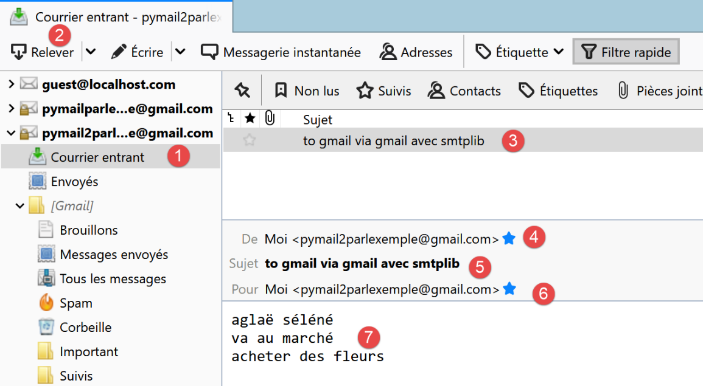
21.5.8. scripts [smtp/03]: handling attached files
We complete the [smtp/02/main] script so that the sent email can have attachments.

The script [smtp/03/main] is configured by the following script [smtp/03/config]:
import os
def configure() -> dict:
# application configuration
script_dir = os.path.dirname(os.path.abspath(__file__))
return {
# description: description of the email sent
# smtp-server: SMTP server
# smtp-port: SMTP server port
# from: sender
# to: recipient
# subject: email subject
# message: email message
"mails": [
{
"description": "Send email to Gmail via Gmail using smtplib",
"smtp-server": "smtp.gmail.com",
"smtp-port": "587",
"from": "pymail2parlexemple@gmail.com",
"to": "pymail2parlexemple@gmail.com",
"subject": "to Gmail via Gmail using smtplib",
# testing accented characters
"message": "aglaë séléné\ngoes to the market\nto buy flowers",
# SMTP with authentication
"user": "pymail2parlexemple@gmail.com",
"password": "#6prIlhD&@1QZ3TG",
# Here, you must use absolute paths for attached files
"attachments": [
f"{script_dir}/attachments/attached_file.docx",
f"{script_dir}/attachments/attached_file.pdf",
]
}
]
}
The [smtp/03/config] file differs from the [smtp/02/config] file used previously only in the optional presence of an [attachments] list (lines 30–32), which specifies the list of files to attach to the message to be sent.
The [smtp/03/main] script is as follows:
# imports
import email
import mimetypes
import os
import smtplib
from email import encoders
from email.mime.audio import MIMEAudio
from email.mime.base import MIMEBase
from email.mime.image import MIMEImage
from email.mime.message import MIMEMessage
from email.mime.multipart import MIMEMultipart
from email.mime.text import MIMEText
from email.utils import formatdate
# -----------------------------------------------------------------------
def sendmail(mail: dict, verbose: True):
# sends mail[message] to the SMTP server mail[smtp-server] on behalf of mail[from]
# to mail[to]. If verbose=True, logs client-server exchanges
# we use the smtplib library
# we let exceptions propagate
#
# the SMTP server
server = smtplib.SMTP(mail["smtp-server"])
# verbose mode
server.set_debuglevel(verbose)
# secure connection?
if "user" in mail:
server.starttls()
server.login(mail["user"], mail["password"])
# constructing a multipart message - this is the message that will be sent
# credit: https://docs.python.org/3.4/library/email-examples.html
msg = MIMEMultipart()
msg['From'] = mail["from"]
msg['To'] = mail["to"]
msg['Date'] = formatdate(localtime=True)
msg['Subject'] = mail["subject"]
# attach the text message in MIMEText format
msg.attach(MIMEText(mail["message"]))
# iterate through the attachments
for path in mail["attachments"]:
# path must be an absolute path
# guess the type of the attached file
ctype, encoding = mimetypes.guess_type(path)
# if we couldn't guess
if ctype is None or encoding is not None:
# No guess could be made, or the file is encoded (compressed), so
# use a generic bag-of-bits type.
ctype = 'application/octet-stream'
# split the type into maintype and subtype
maintype, subtype = ctype.split('/', 1)
# handle the different cases
if maintype == 'text':
with open(path) as fp:
# Note: we should handle calculating the charset
part = MIMEText(fp.read(), _subtype=subtype)
elif maintype == 'image':
with open(path, 'rb') as fp:
part = MIMEImage(fp.read(), _subtype=subtype)
elif maintype == 'audio':
with open(path, 'rb') as fp:
part = MIMEAudio(fp.read(), _subtype=subtype)
# case of message type / rfc822
elif maintype == 'message':
with open(path, 'rb') as fp:
part = MIMEMessage(email.message_from_bytes(fp.read()))
else:
# other cases
with open(path, 'rb') as fp:
part = MIMEBase(maintype, subtype)
part.set_payload(fp.read())
# Encode the payload using Base64
encoders.encode_base64(part)
# Set the filename parameter
basename = os.path.basename(path)
part.add_header('Content-Disposition', 'attachment', filename=basename)
# Attach the file to the message to be sent
msg.attach(part)
# All attachments have been added—send the message as a string
server.send_message(msg)
# main ----------------------------------------------------------------
..
Comments
- lines 18-32: the [sendmail] function remains the same as it was when there were no attachments;
- line 35: the following code is taken from official Python documentation;
- line 36: the message to be sent will consist of several parts: text and attached files. This is called a [Multipart] message;
- lines 37–40: the [Multipart] message contains the usual fields found in any email;
- line 42: the various parts of the [Multipart] message [msg] are attached to the message using the [msg.attach] method (line 81). The attached parts can be of any type. These are identified by a MIME type. The MIME type for plain text is [MIMEText];
- lines 44–81: all attachments for the message to be sent are attached to the [Multipart] message [msg] (line 81);
- line 44: [path] represents the absolute path of the file to be attached;
- line 47: to determine the MIME type to use for the attachment, we will use the file extension (.docx, .php, etc.) of the file to be attached. The [mimetypes.guess_type] method performs this task. It returns two pieces of information:
- [ctype]: the MIME type of the file;
- [encoding]: information about its encoding;
- lines 49–52: if the file’s MIME type cannot be determined, it is treated as a binary file (line 52);
- line 54: a file’s MIME type is broken down into primary type / secondary type, for example [application/pdf]. We separate these two elements;
- lines 56–76: different cases are handled depending on the value of the primary MIME type. For example, in the case of a PDF file ([application/pdf]), lines 70–76 are executed:
- lines 56–59: the case where the attached file is a text file. In this case, an element of type [MIMEText] with content [fp.read] is created;
- lines 60–62: the case where the file contains an image. In this case, we create an element of type [MIMEImage] with content [fp.read];
- lines 63–65: the case where the file is an audio file. In this case, an element of type [MIMEAudio] with content [fp.read] is created;
- Lines 66–69: the case where the file is an email. In this case, we create an element of type [MIMEMessage] (line 69) with content [email.message_from_bytes(fp.read())]. Unlike the previous cases where the content of the MIME element was the binary content of the associated file, here the content of the MIMEMessage element is of type [email.message.Message];
- lines 70–76: other cases. This includes, for example, the Word and PDF files in our example;
- line 72: the file to be attached is opened in binary mode (rb=read binary);
- line 74: [fp.read] reads the entire binary file;
- lines 72–74: the [with open(…) as file] structure does two things:
- it opens the file and assigns it the [file] descriptor;
- it ensures that upon exiting the [with] block, whether an error occurs or not, the [file] descriptor will be closed. It is therefore an alternative to the [try file=open(…)/ finally] structure;
- line 73: a new [part] element is created to be included in the Multipart message. Here, the [MIMEBase] class is used, and the [maintype, subtype] elements determined on line 54 are passed to the constructor;
- line 74: the element to be included in the Multipart message must have content. This can be initialized using the [set_payload] method;
- lines 75-76: attached files must be 7-bit encoded. Historically, some SMTP servers only supported 7-bit encoded characters. Here, the encoding known as ‘Base64’ is used;
- line 77: starting from this line, the processing is the same as for all the MIME types we created on lines 56–76 [MIMEMessage, MIMEImage, MIMEAudio, MIMEBase, MIMEText];
- line 79: the element to be added to the Multipart message has a header describing it. Here we indicate that the added element corresponds to an attached file. The name of this file is the third parameter passed to the [add_header] method. This file name is often used by email clients to save the attached file under that name in the client’s file system. So far, we have been working with the absolute path of the attached file. Here, we simply pass its name without the path (line 78);
- line 81: the file’s binary data is embedded in the [msg Multipart] message;
- line 83: once all parts of the message have been attached to the [msg Multipart], it is sent;
Results
If we run the [smtp/03/main] script with the [smtp/02/config] file already presented, the [pymail2parlexemple@gmail.com] account receives this:
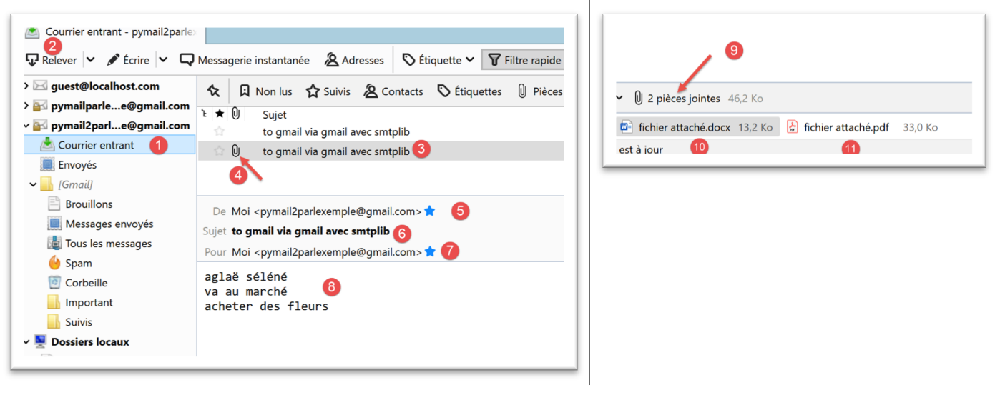
The attached files are shown in [4, 9-11].
Let’s look at an example now with an email attachment. We will save the email received in [3] above:

We save the email under the name [mail attachment 1.eml] in the [smtp/03/attachments] folder.
We will now modify the [smtp/03/config] file as follows:
import os
def configure() -> dict:
# application configuration
script_dir = os.path.dirname(os.path.abspath(__file__))
return {
# description: description of the email sent
# smtp-server: SMTP server
# smtp-port: SMTP server port
# from: sender
# to: recipient
# subject: email subject
# message: email message
"mails": [
{
"description": "send email to Gmail via Gmail using smtplib",
"smtp-server": "smtp.gmail.com",
"smtp-port": "587",
"from": "pymail2parlexemple@gmail.com",
"to": "pymail2parlexemple@gmail.com",
"subject": "to Gmail via Gmail with smtplib",
# testing accented characters
"message": "aglaë séléné\ngoes to the market\nto buy flowers",
# SMTP with authentication
"user": "pymail2parlexemple@gmail.com",
"password": "#6prIlhD&@1QZ3TG",
# Here, you must use absolute paths for attached files
"attachments": [
f"{script_dir}/attachments/attached_file.docx",
f"{script_dir}/attachments/attached_file.pdf",
f"{script_dir}/attachments/attached-email-1.eml",
]
}
]
}
- line 33, we added an attachment;
Now we run the [smtp/03/main] script again. This produces the following result in the user’s mailbox [pymail2parlexemple@gmail.com]:

- in [1], the received email;
- in [2]: the message text;
- in [3]: the text of the attached email;
- in [4]: Thunderbird found 5 attachments:
- [attached_file.docx];
- [attached file.pdf];
- [attached-email-1.eml]. This attachment is itself an email containing two attachments:
- [attached_file.docx];
- [attached file.pdf];
21.6. The POP3 protocol
21.6.1. Introduction
To read emails stored on a mail server, two protocols exist:
- the POP3 (Post Office Protocol) protocol, historically the first protocol but rarely used today;
- the IMAP (Internet Message Access Protocol) protocol, which is newer than POP3 and currently the most widely used;
To explore the POP3 protocol, we will use the following architecture:

- [Server B] will be, depending on the situation:
- a local POP3 server, implemented by the [hMailServer] mail server;
- the server [pop.gmail.com], which is the POP3 server for the email service [gmail.com];
- [Client A] will be a POP3 client in various forms:
- the [RawTcpClient] client to explore the POP3 protocol;
- a Python script that emulates the POP3 protocol of the [RawTcpClient] client;
- a Python script using Python modules to handle attachments and establish an encrypted and authenticated connection when required by the POP3 server;
21.6.2. Exploring the POP3 protocol
As we did with the SMTP protocol, we will explore the POP3 protocol using the logs from the [hMailServer] mail server. We need to start this server.
Using Thunderbird, we will:
- send an email to the user [guest@localhost.com];
- read this user’s mailbox;
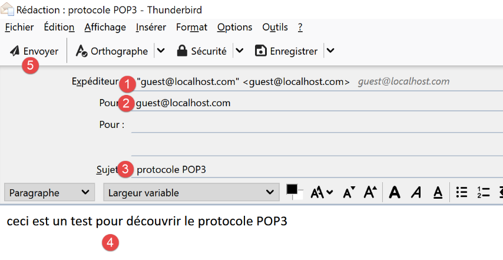
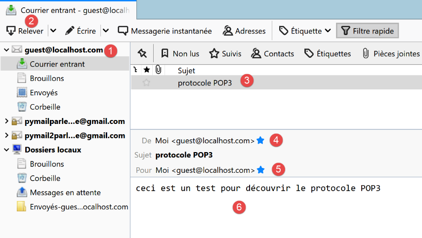
In [3-6] above, the message received by the user [guest@localhost.com].
We will now examine the logs of the [hMailServer]. To do this, we will use the administration tool [hMailServer Administrator]:

The POP3 logs are as follows (the last lines in today’s log file):
"POP3D" 35084 5 "2020-07-08 14:19:46.392" "127.0.0.1" "SENT: +OK Welcome to the localhost.com POP3 server"
"POP3D" 34968 5 "2020-07-08 14:19:46.405" "127.0.0.1" "RECEIVED: CAPA"
"POP3D" 34968 5 "2020-07-08 14:19:46.407" "127.0.0.1" "SENT: +OK CAPA list follows[nl]USER[nl]UIDL[nl]TOP[nl]."
"POP3D" 35076 5 "2020-07-08 14:19:46.410" "127.0.0.1" "RECEIVED: USER guest"
"POP3D" 35076 5 "2020-07-08 14:19:46.411" "127.0.0.1" "SENT: +OK Send your password"
"POP3D" 34968 5 "2020-07-08 14:19:46.418" "127.0.0.1" "RECEIVED: PASS ***"
"POP3D" 34968 5 "2020-07-08 14:19:46.421" "127.0.0.1" "SENT: +OK Mailbox locked and ready"
"POP3D" 34968 5 "2020-07-08 14:19:46.423" "127.0.0.1" "RECEIVED: STAT"
"POP3D" 34968 5 "2020-07-08 14:19:46.423" "127.0.0.1" "SENT: +OK 1 612"
"POP3D" 34968 5 "2020-07-08 14:19:46.426" "127.0.0.1" "RECEIVED: LIST"
"POP3D" 34968 5 "2020-07-08 14:19:46.426" "127.0.0.1" "SENT: +OK 1 message (612 bytes)"
"POP3D" 34968 5 "2020-07-08 14:19:46.426" "127.0.0.1" "SENT: 1,612[nl]."
"POP3D" 35076 5 "2020-07-08 14:19:46.427" "127.0.0.1" "RECEIVED: UIDL"
"POP3D" 35076 5 "2020-07-08 14:19:46.428" "127.0.0.1" "SENT: +OK 1 message (612 bytes)[nl]1 42[nl]."
"POP3D" 34968 5 "2020-07-08 14:19:46.435" "127.0.0.1" "RECEIVED: RETR 1"
"POP3D" 34968 5 "2020-07-08 14:19:46.436" "127.0.0.1" "SENT: ."
"POP3D" 34924 5 "2020-07-08 14:19:46.459" "127.0.0.1" "RECEIVED: QUIT"
"POP3D" 34924 5 "2020-07-08 14:19:46.459" "127.0.0.1" "SENT: +OK POP3 server saying goodbye..."
- Line 1: The POP3 server sends a welcome message to the client (Thunderbird) that has just connected;
- line 2: the client sends the [CAPA] (capabilities) command to request a list of commands it can use;
- line 3: the server responds that it can use the [USER, UIDL, TOP] commands. The POP server begins its responses with [+OK] or [-ERR] to indicate whether it succeeded or failed to execute the client’s command;
- Line 4: The client sends the [USER guest] command to indicate that it wants to access the mailbox of the user [guest];
- Line 5: The server responds with [+OK] and requests the password for [guest];
- line 6: the client sends the command [PASS password] to send the password for the user [guest]. Here, the password is sent in plain text because the POP3 server has not enforced a secure connection. We will see that this will be different with Gmail’s POP3 server;
- line 7: the server has validated the username and password. It indicates that it is locking the [guest] user’s mailbox;
- line 8: the client sends the [STAT] command, which requests information about the mailbox;
- line 9: the server responds that there is a 612-byte message. Generally, it responds that there are N messages and provides the total size of these messages;
- line 10: the client sends the [LIST] command. This command requests the list of messages;
- line 11: the server sends the list of messages in the following format:
- a summary line with the number of messages and their total size;
- one line per message indicating the message number and its size;
- line 13: the client sends the [UIDL] command, which requests a list of messages with their identifiers. Each message is identified by a unique number within the email service;
- line 14: the server’s response. We can see that message #1 in the list has the identifier 42;
- line 15: the client sends the [RETR 1] command, requesting that message #1 from the list be transferred to it;
- line 16: the POP3 server does so;
- line 17: the client sends the [QUIT] command to indicate that it is disconnecting from the POP3 server;
- line 18: the server will also close its connection with the client, but first it sends a goodbye message;
We will now reproduce elements of the above dialogue using the [RawTcpClient] client running in a PyCharm window:

The dialogue is as follows:
(venv) C:\Data\st-2020\dev\python\cours-2020\python3-flask-2020\inet\utilitaires>RawTcpClient.exe localhost 110
Client [DESKTOP-30FF5FB:63762] connected to server [localhost-110]
Type your commands (quit to exit):
<-- [+OK Welcome to the localhost.com POP3 server]
USER guest
<-- [+OK Enter your password]
PASS guest
<-- [+OK Mailbox locked and ready]
LIST
<-- [+OK 1 message (612 bytes)]
<-- [1 612]
<-- [.]
RETR 1
<-- [+OK 612 bytes]
<-- [Return-Path: guest@localhost.com]
<-- [Received: from [127.0.0.1] (DESKTOP-30FF5FB [127.0.0.1])]
<-- [ by DESKTOP-30FF5FB with ESMTP]
<-- [ ; Wed, Jul 8, 2020 2:19:36 PM +0200]
<-- [To: guest@localhost.com]
<-- [From: "guest@localhost.com" <guest@localhost.com>]
<-- [Subject: POP3 protocol]
<-- [Message-ID: <ca895136-25c5-411e-373a-a68cbd0eca51@localhost.com>]
<-- [Date: Wed, Jul 8, 2020 2:19:33 PM +0200]
<-- [User-Agent: Mozilla/5.0 (Windows NT 10.0; WOW64; rv:68.0) Gecko/20100101]
<-- [ Thunderbird/68.10.0]
<-- [MIME-Version: 1.0]
<-- [Content-Type: text/plain; charset=utf-8; format=flowed]
<-- [Content-Transfer-Encoding: 8bit]
<-- [Content-Language: fr]
<-- []
<-- [This is a test to check the POP3 protocol]
<-- []
<-- [.]
QUIT
End of connection with the server
- Line 1: We open a connection to port 110 on the [localhost] machine. This is where the [hMailServer] POP3 service runs;
- on lines 5, 7, 9, 13, and 34, we use the commands [USER, PASS, LIST, RETR, QUIT];
- line 4: the POP3 server’s welcome message;
- line 5: we specify that we want to access the mailbox of the user [guest];
- line 7: we send the [guest] user’s password in plain text;
- line 9: we request the list of messages in the mailbox;
- line 13: request message #1;
- lines 14–33: the POP3 server sends message #1;
- line 34: the session is terminated;
Here is a summary of some common commands accepted by a POP3 server:
- the [USER] command is used to specify the user whose mailbox you want to read;
- the [PASS] command is used to specify the password;
- The [LIST] command requests a list of messages in the user’s mailbox;
- The [RETR] command requests the message specified by the number provided;
- The [DELE] command requests the deletion of the message whose number is provided;
- The [QUIT] command tells the server that you are finished;
The server's response can take several forms:
- a single line beginning with [+OK] to indicate that the client's previous command was successful;
- a single line beginning with [-ERR] to indicate that the client's previous command failed;
- multiple lines where:
- the first line begins with [+OK];
- the last line consists of a single period;
21.6.3. scripts [pop3/01]: a basic POP3 client

Since the POP3 protocol has the same structure as the SMTP protocol, the script [pop3/01/main.py] is a port of the script [smtp/01/main.py]. It will have the following configuration file [pop3/01/config.py]:
def configure() -> dict:
# the mailboxes from which emails are retrieved
mailboxes = [
# server: POP3 server
# port: POP3 server port
# user: user whose messages we want to read
# password: their password
# maxmails: the maximum number of emails to download
# timeout: maximum wait time for a server response
# encoding: encoding of received emails
# delete: if True, emails are deleted from the mailbox
# once they have been downloaded locally
{
"server": "localhost",
"port": "110",
"user": "guest",
"password": "guest",
"maxmails": 10,
"timeout": 1.0,
"encoding": "utf-8",
"delete": False
}
]
# return the configuration
return {
"mailboxes": mailboxes
}
- lines 3–24: the list of mailboxes to check. Here, there is only one;
- lines 4–12: meanings of the dictionary entries defining each mailbox;
- line 15: the POP3 server being queried is the local server [hMailServer];
- lines 17-18: we want to read the mailbox of the user [guest@localhost];
- line 19: we will read at most 10 emails;
- line 20: the client will wait a maximum of 1 second for a response from the server;
- line 21: the encoding type of the retrieved messages;
- line 22: we will not delete the downloaded messages;
The script [pop3/01/main.py] is as follows:
# imports
import re
import socket
# -----------------------------------------------------------------------
def readmails(mailbox: dict, verbose: bool):
# reads the mailbox described by the [mailbox] dictionary
# if verbose=True, logs client-server exchanges
…
# --------------------------------------------------------------------------
def send_command(mailbox: dict, connection: socket, command: str, verbose: bool, with_rclf: bool) -> str:
# sends command to the connection channel
# verbose mode if verbose=True
# if with_rclf=True, adds the rclf sequence to the exchange
# makes the first line of the response
…
# --------------------------------------------------------------------------
def display(exchange: str, direction: int):
…
# main ----------------------------------------------------------------
# POP3 (Post Office Protocol) client for reading messages from a mailbox
# POP3 client-server communication protocol
# -> client connects to port 110 of the SMTP server
# <- server sends a welcome message
# -> client sends the USER user command
# <- server responds with OK or not
# -> client sends the command PASS password
# <- server responds with OK or no
# -> client sends the LIST command
# <- server responds OK or not
# -> client sends the RETR command with the number for each email
# <- server responds with OK or not. If OK, sends the content of the requested email
# -> server sends all lines of the email and ends with a line containing the
# single character .
# -> client sends the DELE command followed by the number to delete an email
# <- server responds with OK or no
# # -> client sends the QUIT command to end the dialogue with the server
# <- server responds with OK or not
# Server responses take the form +OK text or -ERR text
# The response may span multiple lines. In that case, the last line consists of a single period
# The text lines exchanged must end with the characters RC(#13) and LF(#10)
#
# retrieve the application configuration
import config
config = config.configure()
# Process the mailboxes one by one
for mailbox in config['mailboxes']:
try:
# console output
print("----------------------------------")
print(
f"Reading POP3 mailbox {mailbox['user']}@{mailbox['server']}:{mailbox['port']}")
# Read the mailbox in verbose mode
readmails(mailbox, True)
# end
print("Reading complete...")
except BaseException as error:
# display the error
print(f"The following error occurred: {error}")
finally:
pass
Comments
As we mentioned, [pop3/01/main.py] is a port of the [smtp/01/main.py] script that we have already discussed. We will only comment on the main differences:
- Line 64: The [readmails] function is responsible for reading emails from a mailbox. The login credentials for this mailbox are stored in the [mailbox] dictionary. The second parameter [True] is the [Verbose] parameter, which in this case enables logging of client/server communication;
The [readmails] function is as follows:
# -----------------------------------------------------------------------
def readmails(mailbox: dict, verbose: bool):
# reads emails from the mailbox described by the [mailbox] dictionary
# if verbose=True, logs client-server exchanges
# we isolate the mailbox parameters
# assumes that the [mailbox] dictionary is valid
server = mailbox['server']
port = int(mailbox['port'])
user = mailbox['user']
password = mailbox['password']
maxmails = mailbox['maxmails']
delete = mailbox['delete']
timeout = mailbox['timeout']
# allow system errors to be reported
connection = None
try:
# Open a connection on port [port] of [server] with a timeout of one second
connection = socket.create_connection((server, port), timeout=timeout)
# connection represents a bidirectional communication stream
# between the client (this program) and the contacted POP3 server
# This channel is used for exchanging commands and information
# Read the welcome message
send_command(mailbox, connection, "", verbose, True)
# USER command
send_command(mailbox, connection, f"USER {user}", verbose, True)
# PASS command
send_command(mailbox, connection, f"PASS {password}", verbose, True)
# LIST command
first_line = send_command(mailbox, connection, "LIST", verbose, True)
# parse the first line to determine the number of messages
match = re.match(r"^\+OK (\d+)", first_line)
number_of_messages = int(match.groups()[0])
# loop through the messages
imessage = 0
while imessage < nbmessages and imessage < maxmails:
# RETR command
send_command(mailbox, connection, f"RETR {imessage + 1}", verbose, True)
# DELE command
if delete:
send_command(mailbox, connection, f"DELE {imessage + 1}", verbose, True)
# next message
message += 1
# QUIT command
send_command(mailbox, connection, "QUIT", verbose, True)
# end
finally:
# close connection
if connection:
connection.close()
Comments
- lines 8–14: retrieve the configuration information for the mailbox to be checked;
- lines 19–20: Open a connection to the POP3 server;
- lines 26-27: read the welcome message sent by the server;
- lines 28-29: send the [USER] command to identify the user whose emails we want;
- lines 30-31: send the [PASS] command to provide the password for that user;
- lines 32-33: send the [LIST] command to find out how many emails are in this user’s mailbox. The [sendCommand] function returns the first line of the server’s response. In this line, the server indicates how many messages are in the mailbox;
- lines 34-36: retrieve the number of messages from the first line of the response;
- lines 39–46: We loop through each message. For each one, we send two commands:
- RETR i: to retrieve message #i (lines 40–41);
- DELE i: to delete it if the configuration requires that read messages be deleted from the server (lines 43-44);
- lines 47–48: the [QUIT] command is sent to tell the server that we are done;
The [send_command] function is as follows:
# --------------------------------------------------------------------------
def send_command(mailbox: dict, connection: socket, command: str, verbose: bool, with_rclf: bool) -> str:
# sends command to the connection channel
# verbose mode if verbose=True
# if with_rclf=True, adds the RCLF sequence to the exchange
# returns the first line of the response
# as an end-of-line marker
if with_rclf:
rclf = "\r\n"
else:
rclf = ""
# send command if not empty
if command:
connection.send(bytearray(f"{command}{rclf}", 'utf-8'))
# print echo if applicable
if verbose:
display(command, 1)
# read the socket as if it were a text file
encoding = f"{mailbox['encoding']}" if mailbox['encoding'] else None
file = connection.makefile(encoding=encoding)
# process this file line by line
# read first line
first_line = response = file.readline().strip()
# verbose mode?
if verbose:
print(first_line, 2)
# retrieve error code
error_code = response[0]
if error_code == "-":
# an error occurred
raise BaseException(response[5:])
# special case for multi-line responses: LIST, RETR
cmd = command.lower()[0:4]
if cmd == "list" or cmd == "retr":
# Last line of the response?
last_line = False
while not last_line:
# read next line
next_line = file.readline().strip()
# verbose mode?
if verbose:
print(next_line, 2)
# last line?
last_line = next_line == "."
# done - return the first line
return first_line
Comments
- lines 13-18: the [command] is sent to the POP3 server only if it is not empty. This is necessary to read the welcome message sent by the POP3 server even though the client has not yet sent any commands;
- lines 19-21: we read the socket as if it were a text file. This allows us to use the [readline] method (line 24) and thus read the message line by line. We use the [encoding] key from the [mailbox] dictionary to specify the encoding of the lines to be read;
- line 24: we read the first line of the response;
- lines 28–32: we handle the case of a possible error. These are of the type [-ERR invalid password, -ERR mailbox unknown, -ERR unable to lock mailbox…];
- line 32: an exception is thrown with the error message;
- line 35: only the [list, retr] commands can have multi-line responses;
- lines 36–45: in the case of a multi-line response, we display all received lines (lines 42–43) until the last line is received (line 45);
- line 46: we return the first line read because, in the case of the [LIST] command, it contains the number of messages in the mailbox;
Results
Let’s take the previous example. Using Thunderbird, we sent the following message to the user [guest@localhost] (the hMailServer must be running):

Upon execution, we obtain the following results:
C:\Data\st-2020\dev\python\cours-2020\python3-flask-2020\venv\Scripts\python.exe C:/Data/st-2020/dev/python/cours-2020/python3-flask-2020/inet/pop3/01/main.py
----------------------------------
Reading the POP3 mailbox guest@localhost:110
<-- [+OK Welcome to the localhost.com POP3 server]
--> [USER guest]
<-- [+OK Enter your password]
--> [PASS guest]
<-- [+OK Mailbox locked and ready]
--> [LIST]
<-- [+OK 1 message (612 bytes)]
<-- [1 612]
<-- [.]
--> [RETR 1]
<-- [+OK 612 bytes]
<-- [Return-Path: guest@localhost.com]
<-- [Received: from [127.0.0.1] (DESKTOP-30FF5FB [127.0.0.1])]
<-- [by DESKTOP-30FF5FB with ESMTP]
<-- [; Wed, Jul 8, 2020 2:19:36 PM +0200]
<-- [To: guest@localhost.com]
<-- [From: "guest@localhost.com" <guest@localhost.com>]
<-- [Subject: POP3 protocol]
<-- [Message-ID: <ca895136-25c5-411e-373a-a68cbd0eca51@localhost.com>]
<-- [Date: Wed, Jul 8, 2020 2:19:33 PM +0200]
<-- [User-Agent: Mozilla/5.0 (Windows NT 10.0; WOW64; rv:68.0) Gecko/20100101]
<-- [Thunderbird/68.10.0]
<-- [MIME-Version: 1.0]
<-- [Content-Type: text/plain; charset=utf-8; format=flowed]
<-- [Content-Transfer-Encoding: 8bit]
<-- [Content-Language: fr]
<-- []
<-- [This is a test to check the POP3 protocol]
<-- []
<-- [.]
--> [QUIT]
<-- [+OK POP3 server saying goodbye...]
Reading complete...
Process finished with exit code 0
- lines 15-31: the message sent to [guest@localhost] is retrieved correctly.
Here we have a basic POP3 client that lacks certain capabilities:
- the ability to communicate with a secure POP3 server;
- the ability to read attachments in a message;
We will implement these two features with a new script, which will be more complex this time.
21.6.4. scripts [pop3/02]: POP3 client with the [poplib] and [email] modules
We will write a POP3 client capable of handling attachments and communicating with secure servers. Additionally, we will save messages and their attachments to files.
We will use two Python modules:
- [poplib]: which will handle the POP3 protocol;
- [email]: which includes numerous submodules that will allow us to parse received messages. Each message is a structured string containing:
- the message headers [From, To, Subject, Return-Path…];
- the message in text and possibly HTML formats;
- attachments;

The script [inet/pop3/02/main] [1] is configured by the file [inet/pop3/02/config] [2] and uses the module [inet/shared/mail_parser] [3].
The [pop3/02/config] file is as follows:
import os
def configure() -> dict:
# app configuration
config = {
# list of mailboxes to manage
"mailboxes": [
# server: POP3 server
# port: POP3 server port
# user: user whose messages you want to read
# password: their password
# maxmails: the maximum number of emails to download
# timeout: maximum wait time for a response from the server
# delete: set to true if downloaded messages should be deleted from the server
# ssl: set to true if emails are retrieved via a secure connection
# output: the folder where downloaded messages are stored
{
"server": "pop.gmail.com",
"port": "995",
"user": "pymail2parlexemple@gmail.com",
"password": "#6prIlhD&@1QZ3TG",
"maxmails": 10,
"delete": False,
"ssl": True,
"timeout": 2.0,
"output": "output"
}
]
}
# absolute path to the script directory
script_dir = os.path.dirname(os.path.abspath(__file__))
# absolute paths of directories to include in the syspath
absolute_dependencies = [
# local directory
f"{script_dir}/../../shared",
]
# syspath configuration
from myutils import set_syspath
set_syspath(absolute_dependencies)
# restore the configuration
return config
The file defines the list of mailboxes to check and sets the application’s Python Path.
There is only one mailbox here:
- lines 22-23: the user whose emails we want to read;
- lines 20-21: the name and port of the POP3 server that stores this user’s emails;
- line 24: the maximum number of emails to retrieve. Indeed, if you try this script on your own mailbox, you probably won’t want to retrieve the hundreds of emails stored there;
- line 25: a boolean indicating whether an email should be deleted after being read (delete=True);
- line 26: setting the [ssl] attribute to True means that the POP3 server defined in lines 20–21 uses an encrypted connection;
- line 27: the maximum timeout for server responses, expressed in seconds;
- line 28: the folder in which to store read emails. It will be created if it does not exist. This is a relative path. When executed, it will be relative to the folder from which you run the script. With [Pycharm], this folder will be the one containing the [pop3/02] script;
The [pop3/02/main] script is as follows:
# imports
import email
import os
import poplib
import shutil
# Reading an email inbox
def readmails(mailbox: dict, verbose: bool):
# reads the mailbox described by the [mailbox] dictionary
# If verbose=True, logs client-server exchanges
…
# main ----------------------------------------------------------------
# POP3 (Post Office Protocol) client for reading emails
# retrieve the application configuration
import config
config = config.configure()
# process the mailboxes one by one
for mailbox in config['mailboxes']:
try:
# console output
print("----------------------------------")
print(
f"Reading POP3 mailbox {mailbox['user']}@{mailbox['server']}:{mailbox['port']}")
# Read the mailbox in verbose mode
readmails(mailbox, True)
# end
print("Reading complete...")
except BaseException as error:
# display the error
print(f"The following error occurred: {error}")
finally:
pass
- lines 17-36: the [main] section of the script is similar to that of the [pop3/01] script;
The [readmails] function is as follows:
# read a mailbox
def readmails(mailbox: dict, verbose: bool):
# reads the mailbox described by the [mailbox] dictionary
# if verbose=True, logs client-server exchanges
# import mail_parser
from mail_parser import save_message
# extract the mailbox parameters
# assume that the [mailbox] dictionary is valid
server = mailbox['server']
port = int(mailbox['port'])
user = mailbox['user']
password = mailbox['password']
maxmails = mailbox['maxmails']
ssl = mailbox['ssl']
timeout = mailbox['timeout']
output = mailbox['output']
# allow system errors to be reported
pop3 = None
try:
# create the storage directories if they don't exist
if not os.path.isdir(output):
os.mkdir(output)
# user
dir2 = f"{output}/{user}"
# Delete the [dir2] folder if it exists, then recreate it
if os.path.isdir(dir2):
# delete
shutil.rmtree(dir2)
# creation
os.mkdir(dir2)
# Open a connection on port [port] of [server]
if ssl:
pop3 = poplib.POP3_SSL(server, port, timeout=timeout)
else:
pop3 = poplib.POP3(server, port, timeout=timeout)
# connection represents a bidirectional communication stream
# between the client (this program) and the contacted POP3 server
# this channel is used for exchanging commands and information
# verbose mode
pop3.set_debuglevel(2 if verbose else 0)
# read welcome message
pop3.getwelcome( )
# USER command
response = pop3.user(user)
# PASS command
response = pop3.pass_(password)
# command LIST
list = pop3.list()
# the emails are in list[1]
email = 0
number_of_emails = len(list[1])
finished = if imail == maxmails or imail == nb_mails
items = list[1]
while not finished:
# current element
element = elements[imail]
# element is a list of bytes that we decode into a string
desc = element.decode()
# we have a string separated by spaces
# the first element is the message ID
num = desc.split()[0]
# retrieve the message
message = pop3.retr(int(num))
# the lines of the message are in message[1]
str_message = ""
for line in message[1]:
# line is a sequence of bytes that we decode into a string
str_message += f"{line.decode()}\r\n"
# message directory
dir3 = f"{dir2}/message_{num}"
# if the directory does not exist, create it
if not os.path.isdir(dir3):
os.mkdir(dir3)
# email.message.Message object
save_message(dir3, email.message_from_string(str_message), 0)
# another email
imail += 1
# Have we reached the maximum?
done = imail == maxmails or imail == nb_mails
# QUIT command
pop3.quit()
finally:
# Close connection
if pop3:
pop3.close()
Comments
- lines 6-7: we import the [mail_parser.save_message] function used on line 80;
- The function's code is encapsulated in a try (line 22)/finally (line 88). This way, all exceptions are propagated to the main code, which catches and displays them;
- Lines 11–18: We retrieve the mailbox configuration information;
- lines 23-33: all messages will be stored in the [output/user] folder, where [output] and [user] are defined in the configuration. We therefore create the [output] folder first, followed by the [output/user] folder. To create the latter, we first delete it on line 31. [shutil] is a module that must be imported. [shutil.rmtree(dir)] deletes the [dir] folder and everything it contains;
- for all operations on system files, we use the [os] module, which must also be imported;
- Lines 34–38: We establish a connection with the POP3 server. If the server is secure, we use the [poplib.POP3_SSL] class; otherwise, the [poplib.POP3] class. The [ssl] attribute used on line 35 comes from the mailbox configuration;
- Line 45: Set the log level:
- 0: no logs;
- 1: commands sent by the POP3 client are logged;
- 2: detailed logs. We can also see what the POP3 client receives;
- Line 47: After the connection, the POP3 server sends a welcome message. We read this message;
- lines 48–49: POP3 protocol USER command;
- lines 50–51: the POP3 protocol’s PASS command;
- lines 52–53: LIST command of the POP3 protocol. The response is a tuple (response, ['message_number bytes'…], bytes), for example list = (b'+OK 3 messages (3859 bytes)', [b'1 584', b'2 550', b'3 2725'], 22). We see that the first two elements of the tuple are bytes (prefixed with b). list[1] is an array where each element is a sequence of bytes containing two pieces of information: the message number and its size in bytes;
- line 56: from the above, we can deduce that the number of messages in the mailbox can be obtained via [len[list1]];
- lines 59–84: we loop through each message. We stop when all have been read or when we have reached the maximum number of emails set by configuration;
- line 61: current element of the list[1] array, so something like b'1 584', a sequence of bytes;
- line 63: we convert the sequence of bytes into a string. We now have the string '1 584';
- line 66: retrieve the message number, here the string '1';
- line 68: we send the POP3 RETR command. We receive a response like:
[message=(b'+OK 584 bytes', [b'Return-Path: guest@localhost', b'Received: from [127.0.0.1] (localhost [127.0.0.1])', b'\tby DESKTOP-528I5CU with ESMTPA', b'\t; Tue, 17 Mar 2020 09:41:50 +0100', b'To: guest@localhost', b'From: "guest@localhost" <guest@localhost>', b'Subject: test', b'Message-ID: <2572d0f0-5b7c-2c31-5a70-c628293d5709@localhost>', b'Date: Tue, 17 Mar 2020 09:41:48 +0100', b'User-Agent: Mozilla/5.0 (Windows NT 10.0; WOW64; rv:68.0) Gecko/20100101', b' Thunderbird/68.6.0', b'MIME-Version: 1.0', b'Content-Type: text/plain; charset=utf-8; format=flowed', b'Content-Transfer-Encoding: 8bit', b'Content-Language: fr', b'', b'Someone went to the market to buy vegetables.', b''], 614)]
- (continued)
- message is a tuple of three elements;
- message[1] is an array of lines. Each line is a sequence of bytes (prefixed with 'b'). The complete message is formed by this set of lines;
- [Return-Path, Received, To, Subject, Message-ID, Content-Type, Content-Transfer-Encoding, Content-Language] are the message headers. Each provides information about the received message. This information will be used to retrieve the message body (the penultimate element of the message[1] array);
- Lines 71–73: We create the string [strMessage] consisting of all the lines of the message. We now have the message in the form of a character string. This message may contain other messages as well as attachments. This is because attachments are stored as character strings. So, a key point to remember is that an email is initially a string of characters, and it is this string that must be analyzed to extract the attachments, any other embedded messages, and of course the message body—what the sender wrote;
- lines 74–78: we will store the message body and the message attachments in the [dir3] folder;
- lines 79–80: We will delegate the analysis of the message to a function [save_message]:
- the first parameter is [dir3], the folder where the message content should be stored;
- the second parameter is of type [email.message.Message]. This object has methods to retrieve the various parts of the message (body, attachments) as well as all its headers. You must import the [email] module to access this object. The [email.message_from_string] function allows you to construct an [email.message.Message] object from the message’s string;
The [save_message] function is part of the [mail_parser] module:
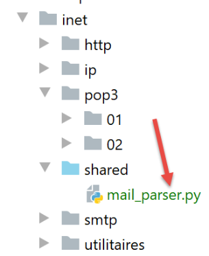
The [mail_parser] module was imported on lines 6–7 of the [readmails] function;
In [mail_parser.py], the [save_message] function is as follows:
# imports
import codecs
import email.contentmanager
import email.header
import email.iterators
import email.message
import os
# Save a message of type email.message.Message
# This function can be called recursively
def save_message(output: str, email_message: email.message.Message, irfc822=0) -> int:
# output: directory for saving messages
# email_message: the message to be saved
# irfc822: current number in the sequence of attached emails
#
# message portion
part = email_message
# The [From, To, Subject] headers are found in one of the multipart parts
# or in a [text/*] part when there is no [multipart] part
keys = part.keys()
# "From" must be among the headers; otherwise, the part does not contain the headers we are looking for
if "From" in keys:
# retrieve certain headers
headers = [f"From: {decode_header(part.get('From'))}",
f"To: {decode_header(part.get('To'))}",
f"Subject: {decode_header(part.get('Subject'))}",
f"Return-Path: {decode_header(part.get('Return-Path'))}",
f"User-Agent: {decode_header(part.get('User-Agent'))}",
f"Date: {decode_header(part.get('Date'))}"]
# Save headers to a text file
with codecs.open(f"{output}/headers.txt", "w", "utf-8") as file:
# write to file
string = '\r\n'.join(headers)
file.write(f"{string}\r\n")
# Part type [part]
main_type = part.get_content_maintype()
…
Comments
- line 12: the function takes up to three parameters:
- [output]: the folder where to save the message (2nd parameter);
- [email_message]: a message of type [email.message.Message]. This is a structured type. It contains the email text as well as all attached files and provides methods to retrieve its various elements;
- [irfc822]: this parameter is used to number the emails encapsulated in [email_message];
- line 18: the [email_message] object is placed in [part]. The [email.message.Message] type contains parts [part] (message body, attachments, encapsulated emails) that are also of type [email.message.Message]. Each [part] may have subparts. Thus, the [email.message.Message] type is a tree of elements of type [email.message.Message]:
- [part.ismultipart()] is [True] if the part [part] contains subparts. These are then available via [part.get_payload()];
- when [part.ismultipart()] is [False], it means we have reached a leaf node in the initial message tree: this may be:
- the message body in the form of plain text;
- the message body in the form of HTML text;
- an attachment (except for an encapsulated message for which [part.ismultipart()] is [True]);
- due to the tree-like nature of the [email.message.Message] parameter, the [save_message] function will be called recursively. Recursion stops when the leaves of the tree are reached, i.e., a part [part] for which [part.ismultipart()] is [False];
- line 21: we request the keys (or headers) of the message currently being analyzed (which, due to recursion, may be a subpart of the initial message);
- lines 23–35: we want to record the headers:
- [From]: the sender of the message;
- [To]: the recipient of the message;
- [Subject]: the subject of the message;
- [Return-Path]: the recipient to whom a reply should be sent if a reply is desired. Indeed, this information is not always included in the [From] field;
- [User-Agent]: the POP3 client communicating with the POP3 server;
- [Date]: the date the email was sent;
- line 23: only one of the message parts contains these headers. For the other parts, the code in lines 23–35 will be ignored;
- lines 25–30: we create a list with the six headers;
- line 25: let’s analyze the first header:
- [part.get(key)] retrieves the header associated with the key [key];
- this header may be encoded. If the encoding is not UTF-8, the header is decoded and re-encoded in UTF-8 using the [decode_header] function;
- the first header will be in the form [From: pymail2lexemple@gmail.com];
- lines 31–35: the headers are saved to the file [output/headers.txt];
The [decode_header] function is as follows (still in [mail_parser.py]):
# decoding headers
def decode_header(header: object) -> str:
# decode the header
header = email.header.decode_header(f"{header}")
# the result is an array—here it will have only one element of type (header, encoding)
# if encoding==None, then header is a string
# otherwise it is a list of bytes encoded by encoding
header, encoding = header[0]
if not encoding:
# if no encoding
return header
else:
# if encoding is present, decode
return header.decode(encoding)
Comments
- line 4: decode the header:
- you must import the [email.header] module;
- we get a list of tuples [(header1, encoding1), (header2, encoding2), ...];
- for the headers [From, To, Subject, Return-Path, Date], the list will have only one element;
- line 8: retrieve the single header and its encoding:
- if [encoding == None] then [header] is the header as a string;
- otherwise, [header] is a sequence of bytes representing the encoded header;
- lines 10–11: if there was no encoding, then we return the header;
- lines 12-14: if there was an encoding, then we decode the sequence of bytes we retrieved into a string and return it;
Let’s return to the [save_message] function:
# saving a message of type email.message.Message
# this function can be called recursively
def save_message(output: str, email_message: email.message.Message, irfc822=0) -> int:
# output: directory for saving messages
# email_message: the message to be saved
# irfc822: current number in the sequence of attached emails
#
# message portion
part = email_message
# The [From, To, Subject] headers are found in one of the multipart parts
# or in a [text/*] part when there is no [multipart] part
keys = part.keys()
# From must be part of the headers; otherwise, the part does not contain the headers we are looking for
if "From" is in keys:
# retrieve certain headers
headers = [f"From: {decode_header(part.get('From'))}",
f"To: {decode_header(part.get('To'))}",
f"Subject: {decode_header(part.get('Subject'))}",
f"Return-Path: {decode_header(part.get('Return-Path'))}",
f"User-Agent: {decode_header(part.get('User-Agent'))}",
f"Date: {decode_header(part.get('Date'))}"]
# Save headers to a text file
with codecs.open(f"{output}/headers.txt", "w", "utf-8") as file:
# write to file
string = '\r\n'.join(headers)
file.write(f"{string}\r\n")
# type of the part [part]
main_type = part.get_content_maintype()
sub_type = part.get_content_subtype()
type_of_part = f"{main_type}/{sub_type}"
# if the message is of type text/plain
if type_of_part == "text/plain":
# text message
save_textmessage(output, part, 0)
# if the message is of type text/html
elif type_of_part == "text/html":
# HTML message
save_textmessage(output, part, 1)
# if the message is a multipart container
elif part.is_multipart():
…
else:
…
# ignore the other parts (not text/plain, not text/html, not attachment)
# return the current value of irfc822 (numbering of attached emails stored in the output folder)
return irfc822
Comments
- lines 1–26: we processed the headers of the initial message;
- lines 28-31: parts of a message of type [email.message.Message] have a main type and a subtype. We retrieve them;
- lines 32-35: if the processed part is of type [text/plain], then we have reached a leaf node in the initial message tree. This is the text the sender wrote in their message;
- line 35: this text is written to a file:
- the first parameter [output] is the folder where the text should be saved;
- the second parameter is the part of the message containing the text to be saved;
- the third parameter is 0 to save plain text, 1 for HTML text;
- lines 37–40: if the part is of type [text/html], then we have also reached a leaf in the initial message tree. This is the text the sender wrote in their message, this time in HTML format. Not all email clients support this format;
The [save_textmessage] function works as follows:
# Save a text message
def save_textmessage(output: str, part: email.message.Message, type_of_text: int):
# headers
headers = []
# message charset
charset = part.get_content_charset()
if charset is not None:
charset = part.get_content_charset().lower()
headers.append(f"Charset: {charset}")
# content encoding mode
content_transfer_encoding = part.get("Content-Transfer-Encoding")
if content_transfer_encoding is not None:
headers.append(f"Transfer-Content-Encoding: {content_transfer_encoding}")
# 8-bit mode caused issues
if content_transfer_encoding == "8bit":
# retrieve the email message
msg = part.get_payload()
else:
# retrieve the email message
msg = email.contentmanager.raw_data_manager.get_content(part)
# depending on the text type
filename = None
if type_of_text == 0:
# Save the headers
with codecs.open(f"{output}/headers.txt", "a", "utf-8") as file:
# write to file
string = '\r\n'.join(headers)
file.write(f"{string}\r\n")
# text file for the content
filename = f"{output}/mail.txt"
elif type_of_text == 1:
# HTML file for the content
filename = f"{output}/mail.html"
# save the message
with codecs.open(filename, "w", "utf-8") as file:
# write to file
file.write(msg)
Comments
- Like the headers, the message text may be encoded. There can be two encodings:
- the initial encoding of the text (UTF-8, ISO-8859-1, etc.). This is the encoding used by the mail server that sent the message. It is known from the [Content-Type] header of the received message;
- a second encoding that the original text may have undergone to be sent. This is known from the [Transfer-Content-Encoding] header of the received message;
- line 6: the initial encoding of the text;
- line 11: the second encoding that the text underwent for its transfer to the recipient;
- lines 9, 13: these two pieces of information are placed in the [headers] list. They will be added to the information in the [headers.txt] file, which records certain message headers;
- line 20: [email.contentmanager.raw_data_manager.get_content] retrieves the message with its initial encoding 1. We have removed encoding 2. However, the [email.contentmanager.raw_data_manager] object only supports two types of [Transfer-Content-Encoding]:
- [quoted-printable];
- [base64];
It ignores the others. However, Thunderbird, for example, uses the [Transfer-Content-Encoding] named "8bit". This encoding is ignored, and messages containing accented characters are garbled. The message can then be retrieved using the [part.get_payload()] method (lines 15–17);
- line 21: at this point, we have the message stripped of its transfer encoding, i.e., the message as it was written by the sender;
- lines 22–37: this is the case where we need to save a text message;
- lines 24–28: We save the two headers constructed in lines 9 and 13 to the file [headers.txt]. This file already exists and contains headers. Therefore, we use mode "a" (line 25) to open this file. "a" stands for "append," and the new headers are added (at the end of the file) to the existing contents of the [headers.txt] file;
- line 30: the name of the file in which to save the text message;
- line 33: the name of the file in which to save the HTML message;
- lines 34–37: the UTF-8 text is saved to a file;
Let’s return to the [save_message] function:
# saving a message of type email.message.Message
# this function can be called recursively
def save_message(output: str, email_message: email.message.Message, irfc822=0) -> int:
# output: directory for saving messages
# email_message: the message to be saved
# irfc822: current number in the sequence of attached emails
#
# part of the message
part = email_message
# The [From, To, Subject] headers are found in one of the multipart sections
# or in a [text/*] part when there is no [multipart] part
keys = part.keys()
# "From" must be among the headers; otherwise, the part does not contain the headers we are looking for
if "From" in keys:
# we retrieve certain headers
headers = [f"From: {decode_header(part.get('From'))}",
f"To: {decode_header(part.get('To'))}",
f"Subject: {decode_header(part.get('Subject'))}",
f"Return-Path: {decode_header(part.get('Return-Path'))}",
f"User-Agent: {decode_header(part.get('User-Agent'))}",
f"Date: {decode_header(part.get('Date'))}"]
# Save headers to a text file
with codecs.open(f"{output}/headers.txt", "w", "utf-8") as file:
# write to file
string = '\r\n'.join(headers)
file.write(f"{string}\r\n")
# type of the part [part]
main_type = part.get_content_maintype()
sub_type = part.get_content_subtype()
type_of_part = f"{main_type}/{sub_type}"
# if the message is of type text/plain
if type_of_part == "text/plain":
# text message
save_textmessage(output, part, 0)
# if the message is of type text/html
elif type_of_part == "text/html":
# HTML message
save_textmessage(output, part, 1)
# if the message is a multipart container
elif part.is_multipart():
# special case of an email with an attachment
if type_of_part == "message/rfc822":
# create a new folder output2 for the attached email
irfc822 += 1
output2 = f"{output}/rfc822_{irfc822}"
os.mkdir(output2)
# save the subparts of the irfc822 message to output2
for subpart in part.get_payload():
# In the new irfc822 directory, restart at 0
save_message(output2, subpart, 0)
else:
# this is not an email with an attachment
# save the subparts to the current directory output
# irfc822 must then be incremented for each message/rfc822 subpart
for subpart in part.get_payload():
# save_message returns the last value of irfc822
# incremented by 1 if subpart="message/rfc822", not incremented otherwise
irfc822 = save_message(output, subpart, irfc822)
else:
# other cases (not text/plain, not text/html, not multipart)
# attachment?
disposition = part.get('Content-Disposition')
if disposition and disposition.startswith('attachment'):
save_attachment(output, part)
# ignore other parts (not text/plain, not text/html, not attachment)
# return the current value of irfc822 (numbering of attached emails stored in the output folder)
return irfc822
Comments
- lines 33-40: we have handled two possible cases for a message at one end of the initial message tree (no subparts). We still have two cases left to handle:
- lines 43-62: the case where the analyzed part itself contains subparts (part.ismultipart()==True);
- lines 63–68: for the remaining cases, we only handle the case where the analyzed part is an attachment;
We handle this last case. We are again at an end of the initial message (no subparts). We have already encountered two cases of this type: the text/plain and text/html types. We now handle the case of the attached file.
- line 66: the attachment is identified by the [Content-Disposition] key;
- line 67: if this key exists and begins with the string [attachment], then we are dealing with a file attached to the message;
- line 68: the attachment is saved in the [output] folder;
The [save_attachment] function is as follows:
# save an attachment
def save_attachment(output: str, part: email.message.Message):
# name of the attached file
filename = os.path.basename(part.get_filename())
# the filename may be encoded
# for example =?utf-8?Q?Tutorials-Serge-Tah=C3=A9-1568x268=2Ep
filename = decode_header(filename)
# save the attached file
with open(f"{output}/{filename}", "wb") as file:
file.write(part.get_payload(decode=True))
- Line 4: If [part] is an attachment, then the name of the attached file is obtained via [part.get_filename]. Only the file name is retained, not its path;
- line 8: File names are generally encoded in the same way as message headers. Therefore, we use the [decode_header] function to decode it;
- line 11: the content of the attached file is currently a string produced by encoding (often base64) the original file content into text. To retrieve this original content, we use the function [part.get_payload(decode=True)]. The parameter [decode=True] indicates that the content of the attached file must be decoded. This yields a sequence of bytes;
- Line 10: This sequence of bytes is saved to the file [output/filename]. The "wb" mode for opening the file stands for "write binary";
Let’s return to the code for the [save_message] function:
def save_message(output: str, email_message: email.message.Message, irfc822=0) -> int:
# output: directory for saving messages
# email_message: the message to be saved
# irfc822: current number in the sequence of attached emails
#
# message portion
part = email_message
# the [From, To, Subject] headers are found in one of the multipart parts
# or in a [text/*] part when there is no [multipart] part
keys = part.keys()
# "From" must be among the headers; otherwise, the part does not contain the headers we are looking for
if "From" in keys:
# we retrieve certain headers
headers = [f"From: {decode_header(part.get('From'))}",
f"To: {decode_header(part.get('To'))}",
f"Subject: {decode_header(part.get('Subject'))}",
f"Return-Path: {decode_header(part.get('Return-Path'))}",
f"User-Agent: {decode_header(part.get('User-Agent'))}",
f"Date: {decode_header(part.get('Date'))}"]
# Save headers to a text file
with codecs.open(f"{output}/headers.txt", "w", "utf-8") as file:
# write to file
string = '\r\n'.join(headers)
file.write(f"{string}\r\n")
# type of the part [part]
main_type = part.get_content_maintype()
sub_type = part.get_content_subtype()
type_of_part = f"{main_type}/{sub_type}"
# if the message is of type text/plain
if type_of_part == "text/plain":
# text message
save_textmessage(output, part, 0)
# if the message is of type text/html
elif type_of_part == "text/html":
# HTML message
save_textmessage(output, part, 1)
# if the message is a multipart container
elif part.is_multipart():
# special case of an email with an attachment
if type_of_part == "message/rfc822":
# create a new folder output2 for the attached email
irfc822 += 1
output2 = f"{output}/rfc822_{irfc822}"
os.mkdir(output2)
# save the subparts of the irfc822 message to output2
for subpart in part.get_payload():
# in the new irfc822 directory, restart at 0
save_message(output2, subpart, 0)
else:
# this is not an email with an attachment
# save subparts to the current folder output
# irfc822 must then be incremented for each subpart message/rfc822
for subpart in part.get_payload():
# save_message returns the last value of irfc822
# Incremented by 1 if subpart="message/rfc822", otherwise not incremented
irfc822 = save_message(output, subpart, irfc822)
else:
# other cases (not text/plain, not text/html, not multipart)
# attachment?
disposition = part.get('Content-Disposition')
if disposition and disposition.startswith('attachment'):
save_attachment(output, part)
# ignore other parts (not text/plain, not text/html, not attachment)
# return the current value of irfc822 (numbering of attached emails stored in the output folder)
return irfc822
Comments
- We have handled the cases involving the leaf nodes of the initial message tree: the parts [text/plain, text/html, and Content-Disposition=attachment;…] We still need to handle the case where the analyzed part is a container of parts, i.e., it contains subparts [part.is_multipart()==True], line 41. To reach the end nodes of the message tree, we must therefore analyze these subparts;
- line 43: we handle the case where the analyzed part has a type [message/rfc822] in a special way. This is the type of an email. This is therefore the case where an email has another email as an attachment;
The code is as follows:
# if the message is a container of parts
elif part.is_multipart():
# special case of an attached email
if type_of_part == "message/rfc822":
# create a new folder named output2 for the attached email
irfc822 += 1
output2 = f"{output}/rfc822_{irfc822}"
os.mkdir(output2)
# save the subparts of the irfc822 message to output2
for subpart in part.get_payload():
# in the new irfc822 directory, restart at 0
save_message(output2, subpart, 0)
else:
# this is not an email with an attachment
# save subparts to the current folder output
# irfc822 must then be incremented for each subpart message/rfc822
for subpart in part.get_payload():
# save_message returns the last value of irfc822
# incremented by 1 if subpart="message/rfc822", not incremented otherwise
irfc822 = save_message(output, subpart, irfc822)
…
return irfc822
- the difference between a [message/rfc822] part and the other multipart parts is that the save directory changes;
- lines 6–8: for the [message/rfc822] part, the save directory becomes the one in line 7 [output/rfc822_x], where x is the number of the attached email, 1 for the first, 2 for the second…;
- line 21: for the other multipart parts, the save directory remains the [output] directory of the original message. The directory is not changed;
- lines 10–12: each subpart is saved via a recursive call to [save_message]. The third parameter is the index number of the emails encapsulated in [subpart]. Initially, this index is 0;
- line 21: same explanation as for line 12, but the value of the third parameter [irfc822] changes. If there are multiple encapsulated emails in the loop on lines 18–21, they must be stored in folders […/rfc822-1…/rfc822_2…]. Therefore, the third parameter of the [save_message] function must take the values 1, 2, 3, and so on. To do this, [save_message] sets the value of [irfc822] (line 21).
Let’s take an example and assume that the list of subparts on line 18 is [subpart1, subpart2, subpart3, subpart4, subpart5] and that [subpart1, subpart3, subpart5] are attached emails, [subpart2] is a text/plain part, and [subpart4] is an attachment, and that we have not yet encountered an attached email in the message [irfc822=0]. In this case:
- (continued)
- [subpart1] is saved on line 21: the [saveMessage] function is executed with irfc822=0;
- [subpart1] is an email attachment, so irfc822 is set to 1 (line 6 of the code). A folder [output/irfc822_1] is created. The value returned by [saveMessage(output,subpart1,0)] is therefore 1 (line 23);
- [subpart2] is saved by line 21: the [saveMessage] function is executed with irfc822=1;
- [subpart2] is not an email attachment. Therefore, irfc822 remains at 1. This is the value retrieved on line 21;
- [subpart3] is saved by line 21: the [save_message] function is executed with irfc822=1;
- [subpart3] is an email attachment, so irfc822 changes to 2 (line 6 of the code). A folder [output/irfc822_2] is created. The value returned by [save_message(output,subpart1,1)] is therefore 2 (line 21);
- [subpart4] is saved by line 21: the [save_message] function is executed with irfc822=2;
- [subpart4] is not an attached email. Therefore, irfc822 remains at 2. This is the value retrieved on line 21;
- [subpart5] is saved by line 21: the [save_message] function is executed with irfc822=2;
- [subpart5] is an email attachment, so irfc822 changes to 3 (line 6 of the code). A folder [output/irfc822_3] is created. The value returned by [save_message(output,subpart1,2)] is therefore 3 (line 21);
Execution examples
We send 4 emails to [pymail2parlexemple@gmail.com] from: [Gmail, Outlook, em Client, Thunderbird]
- [Gmail]: [https://mail.google.com/];
- [Outlook]: [https://outlook.live.com/owa/];
- [Email Client]: [https://www.emclient.com/];
- [Mozilla Thunderbird]: [https://www.thunderbird.net/fr/];
All emails will have the subject [Hélène goes to the market] and the text [buy vegetables]. We want to test how accented characters are retrieved.
We read them using the [pop3/02/main] script configured with the following [pop3/02/config] file:
import os
def configure() -> dict:
# app configuration
config = {
# list of mailboxes to manage
"mailboxes": [
# server: POP3 server
# port: POP3 server port
# user: user whose messages you want to read
# password: their password
# maxmails: the maximum number of emails to download
# timeout: maximum wait time for a response from the server
# delete: set to true if downloaded messages should be deleted from the server
# ssl: set to true if emails are retrieved via a secure connection
# output: the folder where downloaded messages are stored
{
"server": "pop.gmail.com",
"port": "995",
"user": "pymail2parlexemple@gmail.com",
"password": "#6prD&@1QZ3TG",
"maxmails": 10,
"delete": False,
"ssl": True,
"timeout": 2.0,
"output": "output"
}
]
}
# absolute path to the script directory
script_dir = os.path.dirname(os.path.abspath(__file__))
# absolute paths of directories to include in the syspath
absolute_dependencies = [
# local directory
f"{script_dir}/../../shared",
]
# syspath configuration
from myutils import set_syspath
set_syspath(absolute_dependencies)
# restore the configuration
return config
The result is as follows:

Message 1 is the one sent by Thunderbird:

- in [5], Thunderbird [3] uses a [Transfer-Content-Encoding] of type [8bit];
- in [4]: the message is encoded in UTF-8;
Message 2 is the one sent by em Client:

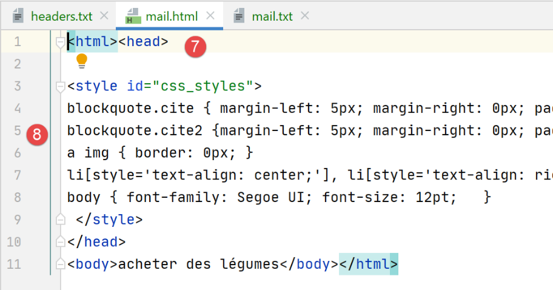
Note that [em Client] encodes the text in UTF-8 [4] and transfers it in [quoted-printable] [5]. It also sent a copy of the message in HTML [7-8]. All the email clients tested here can do this. It is a configuration setting.
Message 3 is the one sent by Gmail:

Note that Gmail encodes the text in UTF-8 [3] and transfers it in [quoted-printable] [4]. In [6], the HTML version of the message.
Message 4 is the one sent by Outlook:

Note that Outlook encodes the text in ISO-8859-1 [3] and transfers it in [quoted-printable] [4].
The previous examples demonstrate two things:
- Our client [pop3/02] has been working properly;
- Email clients have different ways of sending an email;
Now let's look at the attached files. Using Thunderbird, we empty the user's mailbox [pymail2parlexemple@gmail.com]. Then we use the script [smtp/03/main] to send an email with the following configuration [smtp/03/config]:
import os
def configure() -> dict:
# application configuration
script_dir = os.path.dirname(os.path.abspath(__file__))
return {
# description: description of the email sent
# smtp-server: SMTP server
# smtp-port: SMTP server port
# from: sender
# to: recipient
# subject: email subject
# message: email message
"mails": [
{
"description": "send email to Gmail via Gmail using smtplib",
"smtp-server": "smtp.gmail.com",
"smtp-port": "587",
"from": "pymail2parlexemple@gmail.com",
"to": "pymail2parlexemple@gmail.com",
"subject": "to Gmail via Gmail with smtplib",
# testing accented characters
"message": "aglaë séléné\ngoes to the market\nto buy flowers",
# SMTP with authentication
"user": "pymail2parlexemple@gmail.com",
"password": "#6prIlhD&@1QZ3TG",
# Here, you must use absolute paths for attached files
"attachments": [
f"{script_dir}/attachments/attached_file.docx",
f"{script_dir}/attachments/attached_file.pdf",
f"{script_dir}/attachments/attached-email-1.eml",
]
}
]
}
- lines 31-33: we attach to the email:
- a Word file;
- a PDF file;
- an email containing the same two attached files;
Once the email has been sent, we run the [pop3/02] script to read the user's mailbox [pymail2parlexemple@gmail.com]. The results are as follows:

- in [1]: the message with its two attached files;
- in [2]: the attached email itself with its two attached files;
Conclusion
The [mail_parser.py] module is particularly complex. This is due to the complexity of the emails themselves. We will reuse this module for the IMAP protocol.
21.7. The IMAP protocol
21.7.1. Introduction
To read emails stored on a mail server, two protocols exist:
- the POP3 (Post Office Protocol) protocol, historically the first protocol but rarely used today;
- the IMAP (Internet Message Access Protocol) protocol, which is newer than POP3 and currently the most widely used;
To explore the IMAP protocol, we will use the following architecture:

- [Server B] will be, depending on the situation:
- a local IMAP server, implemented by the [hMailServer] mail server;
- the server [imap.gmail.com:993], which is the IMAP server for the email client [Gmail];
- [Client A] will be a Python script using Python modules to manage attachments and establish an encrypted, authenticated connection when required by the IMAP server;
The IMAP protocol goes beyond the POP3 protocol:
- emails are stored on the IMAP server and can be organized into folders;
- the IMAP client can send commands to create, modify, or delete these folders;
Let’s look at an example with Thunderbird. In the following architecture:
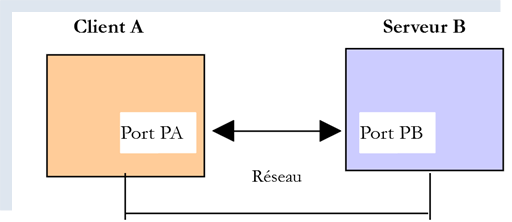
- Thunderbird is client A;
- [imap.gmail.com] is server B (Gmail);
Let’s create a folder in the user’s emails [pymail2parlexemple@gmail.com] using Thunderbird:
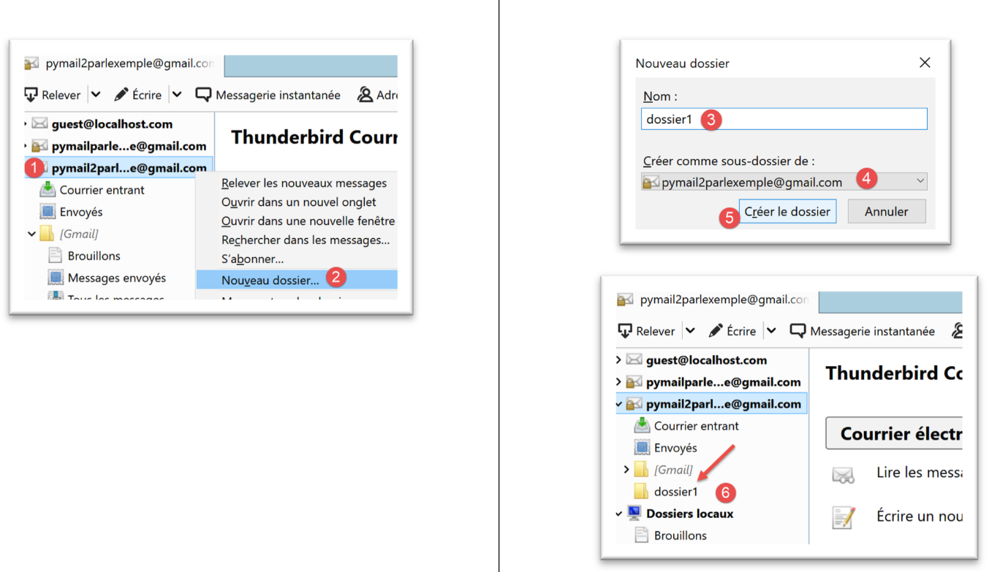
- In [1-6], we create the folder [folder1];

- in [7-8], we move (using the mouse) all files from the [Inbox] folder into the [folder1] folder;
Now let’s log in to the Gmail website and sign in as the user [pymail2parlexemple@gmail.com]:

- In [2-3], the inbox is empty;
- in [1], the [folder1] folder that was created;
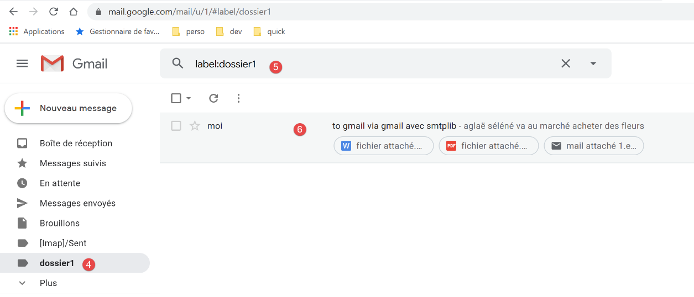
- in [4-6]: the emails that were moved to the [folder1] folder;
We are now looking at the following architecture:

- Client A is the Thunderbird application;
- Client C is the Gmail web application;
- Server B is the Gmail IMAP server;
The user's folder tree is maintained by the IMAP server. Then all IMAP clients synchronize with it to display the user's account folders. Here, Thunderbird sent several commands to:
- create the folder [folder1];
- move messages into this folder;
21.7.2. script [imap/main]: IMAP client with the [imaplib] module

The [imap/main] script is configured by the following [imap/config] script:
import os
def configure() -> dict:
# app configuration
config = {
# list of mailboxes to manage
"mailboxes": [
# server: IMAP server
# port: IMAP server port
# user: user whose messages you want to read
# password: their password
# maxmails: the maximum number of emails to download
# timeout: maximum wait time for a response from the server
# delete: set to true if downloaded messages should be deleted from the server
# ssl: set to true if emails are retrieved via a secure connection
# output: the folder where downloaded messages are stored
{
"server": "imap.gmail.com",
"port": "993",
"user": "pymail2parlexemple@gmail.com",
"password": "#6prIlhD&@1QZ3TG",
"maxmails": 10,
"ssl": True,
"timeout": 2.0,
"output": "output"
}
]
}
# absolute path to the script directory
script_dir = os.path.dirname(os.path.abspath(__file__))
# absolute paths of directories to include in the syspath
absolute_dependencies = [
# local directory
f"{script_dir}/../shared",
]
# syspath configuration
from myutils import set_syspath
set_syspath(absolute_dependencies)
# restore the configuration
return config
Comments
- lines 8–29: the [mailboxes] key is associated with the list of mailboxes to check;
- line 20: the IMAP server;
- line 21: its service port;
- lines 22-23: the user whose emails you want to read;
- line 24: the maximum number of emails to retrieve;
- line 25: indicates whether to establish a secure connection with the IMAP server (True) or not (False);
- line 26: the maximum timeout for waiting for a response from the server;
- line 27: folder for saving read emails;
The [imap/main] script is as follows:
# imports
import email
import imaplib
import os
import shutil
# -----------------------------------------------------------------------
def readmails(mailbox: dict):
…
# main ----------------------------------------------------------------
# IMAP client for reading emails
# retrieve the application configuration
import config
config = config.configure()
# process mailboxes one by one
for mailbox in config['mailboxes']:
try:
# console output
print("----------------------------------")
print(
f"Reading POP3 mailbox {mailbox['user']} / {mailbox['server']}:{mailbox['port']}")
# reading the mailbox
readmails(mailbox)
# end
print("Reading complete...")
# except BaseException as error:
# # display the error
# print(f"The following error occurred: {error}")
finally:
pass
Comments
- lines 14-36: we see the same approach used in the |pop3/02/main| script;
The [readmails] function is as follows:
def readmails(mailbox: dict):
# we let exceptions propagate
#
# mail parser module
from mail_parser import save_message
# retrieve configuration information
output = mailbox['output']
user = mailbox['user']
password = mailbox['password']
timeout = mailbox['timeout']
server = mailbox['server']
port = int(mailbox['port'])
maxmails = mailbox['maxmails']
ssl = mailbox['ssl']
#
# Let's go
imap_resource = None
try:
# create the storage folders if they don't exist
if not os.path.isdir(output):
os.mkdir(output)
# user
dir2 = f"{output}/{user}"
# Delete the [dir2] folder if it exists, then recreate it
if os.path.isdir(dir2):
# delete
shutil.rmtree(dir2)
# creation
os.mkdir(dir2)
# Connect to the IMAP server
if ssl:
imap_resource = imaplib.IMAP4_SSL(server, port)
else:
imap_resource = imaplib.IMAP4(server, port)
# client communication timeout
sock = imap_resource.socket()
sock.settimeout(timeout)
# authentication
imap_resource.login(user, password)
# Select the INBOX folder (incoming mail)
imap_resource.select('INBOX')
# retrieve all messages from this folder: ALL criterion
# no specific encoding: None
typ1, data1 = imap_resource.search(None, 'ALL')
# print(f"typ={typ1}, data={data1}")
# data1[0] is an array of bytes containing the numbers of all messages separated by a space
nums = data1[0].split()
imail = 0
done = imail >= maxmails or imail >= len(nums)
# read the emails one by one
while not finished:
# num is a message ID in binary
num = nums[imail]
# print(f"message # {num}")
# retrieve message #num
typ2, data2 = imap_resource.fetch(num, '(RFC822)')
# print(f"type={typ2}, data={data2}")
# data is a list containing tuples; here, there is only one
# data[0] is the tuple; data[0][1] is the second element of the tuple
# data[0][1] contains a sequence of bytes representing all the lines of the message
# "message" refers to the message text plus all attached files
# we retrieve the message as type email.message.Message
message = email.message_from_bytes(data2[0][1])
# message directory
dir3 = f"{dir2}/message_{int(num)}"
# If the directory does not exist, create it
if not os.path.isdir(dir3):
os.mkdir(dir3)
# save it
save_message(dir3, message)
# Next message
imail += 1
finished = imail >= maxmails or imail >= len(nums)
finally:
if imap_resource:
# close the connection to the mailbox
imap_resource.close()
# log out of the IMAP server
imap_resource.logout()
Comments
- lines 7–15: retrieve the configuration settings;
- lines 19, 79: the code is controlled by a try/finally block. Exceptions are therefore not caught (no except clause), so they are passed up to the calling code, which catches and displays them;
- lines 23–30: Create the folder for saving emails;
- lines 31–35: we connect to the IMAP server. The class used differs depending on whether we are dealing with a secure IMAP server (IMAP4_SSL) or not (IMAP4);
- lines 36–38: Set the client/server communication timeout;
- lines 39–40: authenticate with the IMAP server;
- lines 41-42: we saw that an IMAP user’s mailbox can be organized into folders. The [INBOX] folder is for incoming mail. To select the [folder1] folder, we would write [imapResource.select('folder1')];
- lines 43-45: we request the list of all messages found in [INBOX]:
- the first parameter of [imapResource.search] is an encoding type. [None] means "no encoding filter";
- the second parameter is a criterion. There are different ways to express this. The criterion [ALL] means we want all messages in the folder;
The result of [imapResource.search] looks like this:
typ=OK, data=[b'1 2']
[data] is a list containing the numbers of the messages retrieved. These are in binary. In the example above, two messages were found in the [INBOX] folder;
- Line 49: We retrieve the message IDs. Above, we will have the list [b'1' b'2'], a list of numbers encoded in binary;
- Lines 53–78: We loop through to read the messages in the [INBOX] folder;
- lines 54-55: message number;
- lines 58-59: message #[num] is requested from the IMAP server;
- the first parameter is the number of the desired message;
- the second parameter is a string "(part1)(part2)…" where [part] is the name of a part of the message. I haven’t looked into this in detail. The name (RFC822) refers to the entire email;
We receive something in the following format:
type=OK, data=[(b'1 (RFC822 {614}', b'Return-Path: guest@localhost\r\nReceived: from [127.0.0.1] (localhost [127.0.0.1])\r\n\tby DESKTOP-528I5CU with ESMTPA\r\n\t; Tue, 17 Mar 2020 09:41:50 +0100\r\nTo: guest@localhost\r\nFrom: "guest@localhost" <guest@localhost>\r\nSubject: test\r\nMessage-ID: <2572d0f0-5b7c-2c31-5a70-c628293d5709@localhost>\r\nDate: Tue, 17 Mar 2020 09:41:48 +0100\r\nUser-Agent: Mozilla/5.0 (Windows NT 10.0; WOW64; rv:68.0) Gecko/20100101\r\n Thunderbird/68.6.0\r\nMIME-Version: 1.0\r\nContent-Type: text/plain; charset=utf-8; format=flowed\r\nContent-Transfer-Encoding: 8bit\r\nContent-Language: fr\r\n\r\n\xc3\xa9l\xc3\xa8ne went to the market to buy vegetables.\r\n\r\n'), b')']
The element [data] here is a list with one element, and that single element is a tuple of three elements:
data = [
(b'1 (RFC822 {614}',
b'Return-Path: guest@localhost\r\nReceived: from [127.0.0.1] (localhost [127.0.0.1])\r\n\tby DESKTOP-528I5CU with ESMTPA\r\n\t; Tue, 17 Mar 2020 09:41:50 +0100\r\nTo: guest@localhost\r\nFrom: "guest@localhost" <guest@localhost>\r\nSubject: test\r\nMessage-ID: <2572d0f0-5b7c-2c31-5a70-c628293d5709@localhost>\r\nDate: Tue, 17 Mar 2020 09:41:48 +0100\r\nUser-Agent: Mozilla/5.0 (Windows NT 10.0; WOW64; rv:68.0) Gecko/20100101\r\n Thunderbird/68.6.0\r\nMIME-Version: 1.0\r\nContent-Type: text/plain; charset=utf-8; format=flowed\r\nContent-Transfer-Encoding: 8bit\r\nContent-Language: fr\r\n\r\n\xc3\xa9l\xc3\xa8ne went to the market to buy vegetables.\r\n\r\n'),
b')'
]
The second element of this tuple is a binary string representing the entire requested message. We can recognize above elements already presented when studying the [mail_parser] module.
data[0] represents a two-element tuple. data[0][1] represents the message lines in binary form.
- line 68: the function [email.message_from_bytes(data2[0][1])] constructs an object of type [email.message.Message] from the message lines. The type [email.message.Message] is the type of the parameter of the [mail_parser] module that we wrote earlier;
- lines 69–73: we create the save folder for message #[num];
- line 75: we call the [save_message] function from the [mail_parser] module on line 5. This function was described in the section |pop3/02/main|;
- lines 76–78: loop back to process the next message;
- lines 79–84: whether there was an error or not:
- line 82: close the connection to the queried folder;
- line 84: we disconnect from the IMAP server;
The results obtained are identical to those obtained with the [pop3/02/main] script. This is normal since the same mail parser [mail_parser] is used.